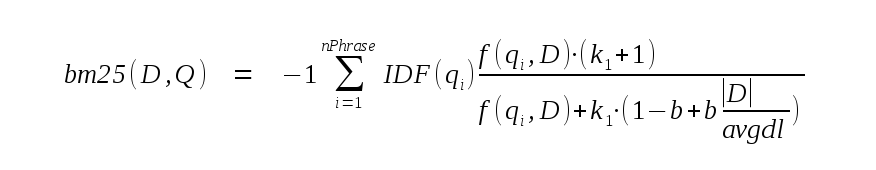

由WaterRun使用gpt-5.1-codex-mini翻译
小巧。快速。可靠。
任意选择其中三条。
任意选择其中三条。
FTS5 是 SQLite 的一个 虚拟表模块，为数据库应用提供 全文搜索功能。 在最基础的形态下，全文搜索引擎允许用户在大量文档中高效地查找 包含一个或多个搜索词的子集。像 Google 向全球用户提供的搜索功能本质上就是一种全文搜索引擎，它允许用户搜索互联网上 包含例如 “fts5” 术语的所有文档。
使用 FTS5 时，用户需要创建一个包含一个或多个列的 FTS5 虚拟表。例如：
CREATE VIRTUAL TABLE email USING fts5(sender, title, body);
在用于创建 FTS5 表的 CREATE VIRTUAL TABLE 语句中添加类型、约束或 PRIMARY KEY 声明是错误。一旦创建，FTS5 表可以像其他表一样通过 INSERT、UPDATE 或 DELETE 语句填充。与任何未声明 PRIMARY KEY 的表一样，FTS5 表具有一个隐式的名为 rowid 的 INTEGER PRIMARY KEY 字段。
上面的示例中未展示的是，在 CREATE VIRTUAL TABLE 语句中还可以向 FTS5 提供 各种选项， 用于配置新表的行为。这些选项可用于修改 FTS5 表从文档和查询中提取术语的方式，为前缀查询在磁盘上创建额外索引，或创建一个作为存储在其他位置内容的索引的 FTS5 表。
填充完成后，有三种方式可针对 FTS5 表的内容执行全文查询：
如果使用 MATCH 或 = 运算符，MATCH 运算符左侧的表达式通常为 FTS5 表的名称（当指定 列过滤器 时为例外）。右侧的表达式必须为指定要搜索的文本值。对于表值函数语法，搜索词作为第一个表参数指定。例如：
-- 查询至少包含一次术语
-- “fts5”（出现在任意列中）的所有行。以下三个查询等价。
SELECT * FROM email WHERE email MATCH 'fts5';
SELECT * FROM email WHERE email = 'fts5';
SELECT * FROM email('fts5');
默认情况下，FTS5 全文搜索不区分大小写。与任何未包含 ORDER BY 子句的 SQL 查询一样，上例以任意顺序返回结果。若需按相关度（从高到低）排序，可在全文查询中添加 ORDER BY：
-- 查询至少包含一次术语 -- “fts5”（出现在任意列中）。按匹配程度从最好到最差返回结果。 SELECT * FROM email WHERE email MATCH 'fts5' ORDER BY rank;
应用程序可以使用 FTS5 辅助函数 除匹配行的列值和 rowid 外，还可以检索关于匹配行的额外信息。例如，可以使用辅助函数检索匹配行中某列值的副本，并将所有匹配术语用 html 的 <b></b> 标记包裹起来。辅助函数的调用方式与 SQLite 的 标量函数 相同，只不过第一个参数必须指定 FTS5 表的名称。例如：
-- 查询匹配“fts5”的行。返回每行 “body” 列的副本，
-- 用 <b></b> 包裹匹配项。
SELECT highlight(email, 2, '<b>', '</b>') FROM email('fts5');
有关可用辅助函数的描述以及特殊 “rank” 列的配置详情 见下文。也可以在 C 语言中实现 自定义辅助函数 并将其注册到 FTS5，就像向 SQLite 核心注册自定义 SQL 函数那样。
除了查找包含某个术语的所有行外，FTS5 还允许用户搜索包含以下内容的行：
通过将更复杂的 FTS5 查询字符串作为 MATCH 运算符右侧（或 = 运算符右侧，或表值函数的第一参数）提供即可请求这些高级搜索。全文查询语法在 此处 进行了描述。
从 3.9.0 版本（2015-10-14）开始， FTS5 被包含在 SQLite 的 合并源代码 中。 如果使用标准源树，在运行 configure 脚本时通过指定 “--enable-fts5” 选项即可启用 FTS5。 （FTS5 在源树 configure 脚本中默认禁用，但在合并源代码的 configure 脚本中默认启用。未来这些默认值可能会更改。）
或者，如果通过其他构建系统编译 sqlite3.c，只需确保定义了 SQLITE_ENABLE_FTS5 预处理器符号即可。
另一种方式是将 FTS5 构建为可加载扩展。
FTS5 的标准源代码位于 SQLite 源树的 “ext/fts5” 目录中，包含一系列 *.c 及其它文件。构建过程会将其精简为两个文件 —— “fts5.c” 与 “fts5.h”，可用于构建 SQLite 的可加载扩展。
$ wget -c https://sqlite.org/src/tarball/SQLite-trunk.tgz?uuid=trunk -O SQLite-trunk.tgz .... output ... $ tar -xzf SQLite-trunk.tgz $ cd SQLite-trunk $ ./configure && make fts5.c ... lots of output ... $ ls fts5.[ch] fts5.c fts5.h
之后，“fts5.c” 中的代码就可以编译为可加载扩展，或按照 编译可加载扩展 中的描述静态链接到应用程序中。该扩展定义了两个入口点，它们的功能相同：
另一份文件 “fts5.h” 并不是编译 FTS5 扩展所必须的。它提供给实现 自定义 FTS5 分词器或辅助函数 的应用使用。
以下代码块以 BNF 形式概述了 FTS 查询语法。后续内容提供了详细解释。
<phrase> := string [*]
<phrase> := <phrase> + <phrase>
<neargroup> := NEAR ( <phrase> <phrase> ... [, N] )
<query> := [ [-] <colspec> :] [^] <phrase>
<query> := [ [-] <colspec> :] <neargroup>
<query> := [ [-] <colspec> :] ( <query> )
<query> := <query> AND <query>
<query> := <query> OR <query>
<query> := <query> NOT <query>
<colspec> := colname
<colspec> := { colname1 colname2 ... }
在 FTS 表达式中，字符串 可以用以下两种方式之一指定：
使用双引号（"）将其括起来。在字符串内部，任何嵌入的双引号字符可通过添加第二个双引号字符以 SQL 方式转义。
作为一个 FTS5 的裸词，且不能是 "AND"、"OR" 或 "NOT"（大小写敏感）。 FTS5 裸词是一串一个或多个连续字符，它们均为以下之一：
FTS 查询中的每个字符串都会由 分词器 解析（“分词”），并提取出零个或多个 词元（或称术语）。例如，默认分词器会将字符串 “alpha beta gamma” 拆分为三个依次出现的词元 —— “alpha”、“beta” 和 “gamma”。
FTS 查询由 短语 构成。一个短语是一个按顺序排列的一个或多个词元列表。查询中每个字符串所产生的词元组成一个单独的短语。使用 “+” 运算符可以将两个短语拼接成一个更大的短语。例如，假设正在使用的分词器将输入 “one.two.three” 拆分为三个词元，下列四个查询都表示相同的短语：
... MATCH '"one two three"' ... MATCH 'one + two + three' ... MATCH '"one two" + three' ... MATCH 'one.two.three'
如果文档中存在至少一个以短语包含的词元序列为子序列，则该短语匹配该文档。
如果在 FTS 表达式中的某个字符串后跟一个 “*" 字符，则该字符串最后提取的词元会被标记为 前缀词元。顾名思义，前缀词元能匹配任何以其为前缀的文档词元。例如下列前两个查询都会匹配包含词元 “one” 紧接着 “two”，且随后紧跟着以 “thr” 开头的任意词元的文档：
... MATCH '"one two thr" * ' ... MATCH 'one + two + thr*' ... MATCH '"one two thr*"' -- 可能无法按预期工作！
上面代码块的最后一个查询可能无法按预期工作。因为 “*" 字符位于双引号内，它会被传递给分词器。分词器可能会丢弃它（或者根据使用的具体分词器，将其视作最终词元的一部分），而不是将其识别为 FTS 的特殊字符。
如果 “^” 字符立即出现在一个非 NEAR 查询短语前，则该短语仅在文档某列的第一个词元处出现时才匹配。 “^” 语法可以与 列过滤器 结合使用，但不能插入短语中间。
... MATCH '^one' -- 任意列的第一个词元必须为 “one” ... MATCH '^ one + two' -- 短语 “one two” 必须出现在列的开头 ... MATCH '^ "one two"' -- 与上条等价 ... MATCH 'a : ^two' -- 列 “a” 的第一个词元必须为 “two” ... MATCH 'NEAR(^one, two)' -- 语法错误！ ... MATCH 'one + ^two' -- 语法错误！ ... MATCH '"^one two"' -- 可能无法按预期工作！
两个或多个短语可以组合成一个 NEAR 组。NEAR 组由关键字 “NEAR”（大小写敏感）后跟左括号，然后是两个或多个用空白分隔的短语，可选地在后面加逗号与数字参数 N，最后以右括号结尾。例如：
... MATCH 'NEAR("one two" "three four", 10)'
... MATCH 'NEAR("one two" thr* + four)'
如果未提供 N 参数，则默认为 10。NEAR 组如果包含以下内容，则视为匹配文档：
例如：
CREATE VIRTUAL TABLE ft USING fts5(x);
INSERT INTO ft(rowid, x) VALUES(1, 'A B C D x x x E F x');
... MATCH 'NEAR(e d, 4)'; -- 匹配！
... MATCH 'NEAR(e d, 3)'; -- 匹配！
... MATCH 'NEAR(e d, 2)'; -- 不匹配！
... MATCH 'NEAR("c d" "e f", 3)'; -- 匹配！
... MATCH 'NEAR("c" "e f", 3)'; -- 不匹配！
... MATCH 'NEAR(a d e, 6)'; -- 匹配！
... MATCH 'NEAR(a d e, 5)'; -- 不匹配！
... MATCH 'NEAR("a b c d" "b c" "e f", 4)'; -- 匹配！
... MATCH 'NEAR("a b c d" "b c" "e f", 3)'; -- 不匹配！
通过在短语或 NEAR 组前加上列名并接冒号，可将其限制为仅匹配 FTS 表的指定列。或者，可以通过在其前添加用花括号包围的列名空白列表并接冒号，将其限制为匹配这些列的集合。列名可以采用上文字符串所接受的两种形式之一。与短语中的字符串不同，列名不会传递给分词器模块。列名在 SQLite 的通常方式下不区分大小写 —— 仅对 ASCII 范围字符理解大小写等价。
... MATCH 'colname : NEAR("one two" "three four", 10)'
... MATCH '"colname" : one + two + three'
... MATCH '{col1 col2} : NEAR("one two" "three four", 10)'
... MATCH '{col2 col1 col3} : one + two + three'
如果列过滤器表达式前有一个 “-” 符号，则其表示不匹配该列的列表。例如：
-- 在除 “colname” 外的所有列中搜索匹配项
... MATCH '- colname : NEAR("one two" "three four", 10)'
-- 在除 “col1”、“col2”和 “col3” 外的列中搜索匹配项
... MATCH '- {col2 col1 col3} : one + two + three'
列过滤器也可以应用于括号包裹的任意表达式。在这种情况下，列过滤器影响表达式内的所有短语。嵌套的列过滤器只能进一步限制匹配的列子集，不能重新启用已被过滤掉的列。例如：
-- 以下表达式等价：
... MATCH '{a b} : ( {b c} : "hello" AND "world" )'
... MATCH '(b : "hello") AND ({a b} : "world")'
最后，还可以通过使用列名作为 MATCH 运算符的左侧（而非通常的表名）来指定单列的列过滤。例如：
-- 假设有如下表： CREATE VIRTUAL TABLE ft USING fts5(a, b, c); -- 以下等价 SELECT * FROM ft WHERE b MATCH 'uvw AND xyz'; SELECT * FROM ft WHERE ft MATCH 'b : (uvw AND xyz)'; -- 此查询无法匹配任何行（因所有列被过滤掉）： SELECT * FROM ft WHERE b MATCH 'a : xyz';
短语与 NEAR 组可以通过 布尔运算符 构成表达式。按优先级从高（最紧密分组）到低（最松散分组）排列，运算符依次为：
| 运算符 | 功能 |
|---|---|
<query1> NOT <query2>
| 当 query1 匹配且 query2 不匹配时为真。 |
<query1> AND <query2>
| 当 query1 与 query2 均匹配时为真。 |
<query1> OR <query2>
| 当 query1 或 query2 中任意一个匹配时为真。 |
可使用括号按常规方式修改运算符优先级。例如：
-- 由于 NOT 的分组比 OR 紧密，可使用下列任一表达式匹配包含词元 “two” -- 但不包含 “three”，或包含词元 “one” 的所有文档。 ... MATCH 'one OR two NOT three' ... MATCH 'one OR (two NOT three)' -- 匹配包含至少一个 “one” 或 “two”，但不包含 “three” 的文档。 ... MATCH '(one OR two) NOT three'
短语与 NEAR 组还可以通过 隐式 AND 运算符 连接。为简化起见，这些运算符未包含在上述 BNF 中。实质上，任何仅由空白分隔的短语或 NEAR 组序列（包括那些仅匹配指定列的片段）会被隐式地视作在每对邻近短语或组之间插入了 AND。隐式 AND 运算符不会出现在括号包裹的表达式之前或之后。隐式 AND 的优先级高于所有其他运算符，包括 NOT。例如：
... MATCH 'one two three' -- 等价于 'one AND two AND three' ... MATCH 'three "one two"' -- 等价于 'three AND "one two"' ... MATCH 'NEAR(one two) three' -- 等价于 'NEAR(one two) AND three' ... MATCH 'one OR two three' -- 等价于 'one OR two AND three' ... MATCH 'one NOT two three' -- 等价于 'one NOT (two AND three)' ... MATCH '(one OR two) three' -- 语法错误！ ... MATCH 'func(one two)' -- 语法错误！
在 “CREATE VIRTUAL TABLE ... USING fts5 ...” 语句中指定的每个参数要么是列声明，要么是配置选项。列声明 由一个或多个由空白分隔的 FTS5 裸词或 SQLite 可接受的字符串字面量组成。
列声明中的第一个字符串或裸词为列名。尝试将 FTS5 表列命名为 “rowid” 或 “rank”，或与表名相同的名称，均属错误，不受支持。
列声明中其余的字符串或裸词为列选项，用于修改该列的行为。列选项不区分大小写。与 SQLite 核心不同，FTS5 将无法识别的列选项视为错误。目前唯一被识别的列选项为 “UNINDEXED”。
配置选项 由一个 FTS5 裸词（即选项名称）、一个 “=” 字符以及选项值组成。选项值可以是单个 FTS5 裸词或 SQLite 可接受的字符串字面量。示例：
CREATE VIRTUAL TABLE mail USING fts5(sender, title, body, tokenize = 'porter ascii');
当前可用的配置选项包括：
被 UNINDEXED 列选项修饰的列的内容不会被添加到 FTS 索引中。这意味着在 MATCH 查询和 FTS5 辅助函数 中，该列不会包含任何可匹配的词元。
例如，为避免将 “uuid” 字段的内容添加到 FTS 索引：
CREATE VIRTUAL TABLE customers USING fts5(name, addr, uuid UNINDEXED);
默认情况下，FTS5 维护单个索引记录文档集中每个词元实例的位置。这意味着完整词元的查询只需单次查找便可快速完成，而前缀词元查询则可能较慢，因为需要执行范围扫描。例如，查询前缀词元 “abc*” 需要扫描所有大于等于 “abc” 且小于 “abd” 的词元。
前缀索引是一个独立索引，记录一定长度字符前缀词元的所有实例位置，从而加速前缀词元查询。例如，为优化前缀词元 “abc*” 的查询需要一个针对三字符前缀的索引。
要向 FTS5 表添加前缀索引，可将 “prefix” 选项设置为单个正整数或由一个或多个正整数组成的空白分隔文本值。每个指定的整数都会创建一个前缀索引。如果在同一 CREATE VIRTUAL TABLE 语句中指定多个 “prefix” 选项，则都会生效。
-- 两种方式创建一个为两字符与三字符前缀词元维护前缀索引的 FTS5 表。 CREATE VIRTUAL TABLE ft USING fts5(a, b, prefix='2 3'); CREATE VIRTUAL TABLE ft USING fts5(a, b, prefix=2, prefix=3);
CREATE VIRTUAL TABLE 的 “tokenize” 选项用于配置 FTS5 表所使用的具体分词器。选项参数必须是 FTS5 裸词或 SQL 文本字面量。该参数本身被视为由一个或多个 FTS5 裸词或 SQL 文本字面量构成的空白序列。第一项为要使用的分词器名称。若存在第二项及之后的条目，则作为参数传递给分词器实现。
与选项值和列名不同，用作分词器的 SQL 文本字面量必须使用单引号包围。例如：
-- 下列语句等价 CREATE VIRTUAL TABLE ft USING fts5(x, tokenize = 'porter ascii'); CREATE VIRTUAL TABLE ft USING fts5(x, tokenize = "porter ascii"); CREATE VIRTUAL TABLE ft USING fts5(x, tokenize = "'porter' 'ascii'"); CREATE VIRTUAL TABLE ft USING fts5(x, tokenize = '''porter'' ''ascii'''); -- 但下面会失败： CREATE VIRTUAL TABLE ft USING fts5(x, tokenize = '"porter" "ascii"'); -- 这个也会失败： CREATE VIRTUAL TABLE ft USING fts5(x, tokenize = 'porter' 'ascii');
FTS5 提供了四个内置分词器模块，后续章节将分别描述：
也可以为 FTS5 创建自定义分词器。其 API 在此处描述。
unicode 分词器将所有 Unicode 字符归类为 “分隔符” 或 “词元”。默认情况下，所有 Unicode 6.1 定义的空白与标点字符被视作分隔符，其它字符为词元。更具体地说，所有一般类别以 “L” 或 “N” 开头（即字母与数字），或者属于类别 “Co”（“其他，私人用途”）的 Unicode 字符都视为词元，其它字符均为分隔符。
每个连续的词元字符序列被视为一个词元。分词器根据 Unicode 6.1 的规则进行大小写折叠。
默认情况下，会从所有拉丁字母中移除变音符。例如，“A”、“a”、“À”、“à”、“” 与 “â” 均被视为等价。
在 token 规范中跟在 “unicode61” 后面的参数将被视为交替出现的选项名与选项值。Unicode61 支持以下选项：
| 选项 | 用途 |
|---|---|
| remove_diacritics | 此选项应设置为 “0”、“1” 或 “2”。默认值为 “1”。若设置为 “1” 或 “2”，则如上文所述，从拉丁字母中移除变音符。但若为 “1”，则在某些罕见情况下（一个 Unicode 码点包含多个变音符）不移除。例如，码点 0x1ED9（“带圆帽和下加点的小写 o”）的变音符不会被移除。这在技术上是一个错误，但若修复会产生向后兼容性问题。当此选项设置为 “2” 时，可正确移除所有拉丁字符的变音符。 |
| categories | 此选项可修改被视为词元对应的 Unicode 通用类别集合。参数必须为两个字符的通用类别缩写组成的空白分隔列表（例如 “Lu” 或 “Nd”），或者将第二个字符替换为星号（“*”）以表示 glob 模式。默认值为 “L* N* Co”。 |
| tokenchars | 用于指定额外应被视为词元的 Unicode 字符，即使它们在 Unicode 6.1 中被归类为空白或标点。该选项的字符串中的所有字符都会被视为词元。 |
| separators | 用于指定额外应被视为分隔符的 Unicode 字符，即使它们在 Unicode 6.1 中被视为词元。该选项的字符串中的所有字符都会被视为分隔符。 |
例如：
-- 创建一个 FTS5 表，该表不会从拉丁字母中移除变音符，
-- 并将连字符与下划线视为词元的一部分。
CREATE VIRTUAL TABLE ft USING fts5(a, b,
tokenize = "unicode61 remove_diacritics 0 tokenchars '-_'"
);
或者：
-- 创建一个 FTS5 表，除了默认的词元类别外，还将 “Mn” 类别视为词元。
CREATE VIRTUAL TABLE ft USING fts5(a, b,
tokenize = "unicode61 categories 'L* N* Co Mn'"
);
FTS5 的 unicode61 分词器与 FTS3/4 的 unicode61 分词器在字节层面上完全兼容。
ASCII 分词器与 Unicode61 分词器类似，不过存在如下区别：
例如：
-- 创建一个使用 ASCII 分词器的 FTS5 表，但不将数字视为词元。
CREATE VIRTUAL TABLE ft USING fts5(a, b,
tokenize = "ascii separators '0123456789'"
);
Porter 分词器是一个包装分词器。它将某个分词器的输出交给 Porter 词干算法 处理，然后再返回给 FTS5。这使得诸如 “correction” 这类搜索词能够匹配 “corrected” 或 “correcting” 等相似词。Porter 词干算法专为英语设计，用于其他语言可能会有不同效果。
默认情况下，Porter 分词器包装默认分词器（unicode61）。如果在 “tokenize” 选项的 “porter” 之后添加一个或多个额外参数，这些参数会作为 Porter 使用的底层分词器规范。例如：
-- 两种方式创建一个使用 Porter 分词器的 FTS5 表，将默认分词器的输出进行词干处理。 CREATE VIRTUAL TABLE ft USING fts5(x, tokenize = porter); CREATE VIRTUAL TABLE ft USING fts5(x, tokenize = 'porter unicode61'); -- 使用 Porter 对 unicode61 分词器的输出进行词干处理，并在词干前移除变音符。 CREATE VIRTUAL TABLE ft USING fts5(x, tokenize = 'porter unicode61 remove_diacritics 1');
Trigram 分词器使 FTS5 支持更一般的子串匹配能力，而不仅仅局限于标准词元匹配。使用 Trigram 分词器时，查询或短语词元可匹配行中的任意字符序列，而不限于完整词元。例如：
CREATE VIRTUAL TABLE tri USING fts5(a, tokenize="trigram");
INSERT INTO tri VALUES('abcdefghij KLMNOPQRST uvwxyz');
-- 下列查询都匹配表中的唯一一行
SELECT * FROM tri('cdefg');
SELECT * FROM tri('cdefg AND pqr');
SELECT * FROM tri('"hij klm" NOT stuv');
Trigram 分词器支持如下选项：
| 选项 | 用途 |
|---|---|
| case_sensitive | 该值可设为 1 或 0（默认）。若设为 1，则匹配区分大小写；否则设置为 0 时，匹配不区分大小写。 |
| remove_diacritics | 该值也可设为 1 或 0（默认）。但如果 case_sensitive 设置为 1，则不能将本选项设为 1 —— 同时为 1 会报错。若启用此选项，则在匹配前先移除文本中的变音符（例如使 “á” 匹配 “a”）。 |
-- 一个区分大小写的 trigram 索引 CREATE VIRTUAL TABLE tri USING fts5(a, tokenize="trigram case_sensitive 1");
除非设置 remove_diacritics 选项，否则使用 Trigram 分词器的 FTS5 表还支持带索引的 GLOB 与 LIKE 模式匹配。例如：
SELECT * FROM tri WHERE a LIKE '%cdefg%'; SELECT * FROM tri WHERE a GLOB '*ij klm*xyz';
如果创建 Trigram 分词器时将 case_sensitive 设置为 1，则仅能索引 GLOB 查询，不能索引 LIKE。
注意事项：
通常，在向 FTS5 表插入一行时，除了建立索引外，FTS5 还会复制原始行的内容。当用户或辅助函数请求列值时，这些值将从该私有副本中读取。“content” 选项可用来创建一个只存储 FTS 全文索引条目的 FTS5 表。由于列值通常远大于相关的全文索引条目，这能显著节省数据库空间。
使用 “content” 选项有两种方式：
通过将 “content” 选项设置为空字符串即可创建无内容 FTS5 表。例如：
CREATE VIRTUAL TABLE ft USING fts5(a, b, c, content='');
无内容 FTS5 表不支持 UPDATE 或 DELETE 语句，也不支持在未为 rowid 提供非空值的情况下执行 INSERT。无内容表不支持 REPLACE 冲突处理。REPLACE 与 INSERT OR REPLACE 语句视为普通 INSERT。可通过 FTS5 delete 命令 从无内容表中删除行。
尝试从无内容 FTS5 表读取除 rowid 之外的列值将返回 SQL NULL。
从 3.43.0 版本开始，还提供无内容删除表。可通过将 content 选项设置为空字符串，并将 contentless_delete 选项设置为 1 创建无内容删除表。例如：
CREATE VIRTUAL TABLE ft USING fts5(a, b, c, content='', contentless_delete=1);
无内容删除表与无内容表的区别在于：
-- 支持的 UPDATE 语句： UPDATE ft SET a=?, b=?, c=? WHERE rowid=?; -- 由于未为 “c” 列提供新值，此 UPDATE 不受支持。 UPDATE ft SET a=?, b=? WHERE rowid=?;
除非需要向后兼容，否则建议新代码优先使用无内容删除表而非无内容表。
通过将 content 选项设置为同一数据库中的一个表、虚拟表或视图（即“内容表”）的名称即可创建外部内容 FTS5 表。当需要列值时，FTS5 会按下列方式查询内容表，并将所需行的 rowid 绑定到 SQL 变量：
SELECT <content_rowid>, <cols> FROM <content> WHERE <content_rowid> = ?;
上述查询中，<content> 替换为内容表名。默认情况下，<content_rowid> 替换为字面文本 “rowid”。如果在 CREATE VIRTUAL TABLE 中设置了 “content_rowid” 选项，则替换为该选项的值。<cols> 替换为 FTS5 表列名的逗号分隔列表。例如：
-- 数据库模式如下： CREATE TABLE t1 (a, b, c, d INTEGER PRIMARY KEY); CREATE VIRTUAL TABLE ft USING fts5(a, c, content=t1, content_rowid=d); -- FTS5 可能发出如下查询： SELECT d, a, c FROM t1 WHERE d = ?;
内容表还可按以下方式查询：
SELECT <content_rowid>, <cols> FROM <content> ORDER BY <content_rowid> ASC; SELECT <content_rowid>, <cols> FROM <content> ORDER BY <content_rowid> DESC;
仍然由用户负责确保外部内容 FTS5 表的内容与内容表保持同步。触发器是一种常见的做法。例如：
-- 创建一个表，并为其创建一个外部内容 FTS5 表来索引。
CREATE TABLE t1(a INTEGER PRIMARY KEY, b, c);
CREATE VIRTUAL TABLE fts_idx USING fts5(b, c, content='t1', content_rowid='a');
-- 用于保持 FTS 索引最新的触发器。
CREATE TRIGGER t1_ai AFTER INSERT ON t1 BEGIN
INSERT INTO fts_idx(rowid, b, c) VALUES (new.a, new.b, new.c);
END;
CREATE TRIGGER t1_ad AFTER DELETE ON t1 BEGIN
INSERT INTO fts_idx(fts_idx, rowid, b, c) VALUES('delete', old.a, old.b, old.c);
END;
CREATE TRIGGER t1_au AFTER UPDATE ON t1 BEGIN
INSERT INTO fts_idx(fts_idx, rowid, b, c) VALUES('delete', old.a, old.b, old.c);
INSERT INTO fts_idx(rowid, b, c) VALUES (new.a, new.b, new.c);
END;
同无内容表一样，外部内容表不支持 REPLACE 冲突处理。任何指定 REPLACE 的操作会以 ABORT 方式处理。
用户需确保带有非空 content= 选项的 FTS5 外部内容表与内容表本身保持一致。如果不一致，针对 FTS5 表的查询结果可能变得反直觉且不稳定。
在这些场景下，查询 FTS5 外部内容表时出现的类似不一致结果可按如下理解：
如果查询未使用全文索引 —— 未包含 MATCH 运算符或等价的表值函数语法 —— 则查询会直接转至内容表执行，因此 FTS 索引的内容不会影响结果。
如果查询使用了全文索引，FTS5 模块会先查询索引以获得匹配行的 rowid 集合。对于每个 rowid，再执行类似如下的查询以获取所需的列值，其中 “?” 被替换为 rowid 值，<content> 与 <content_rowid> 分别替代 content= 与 content_rowid= 选项中的值：
SELECT <content_rowid>, <cols> FROM <content> WHERE <content_rowid> = ?;
例如，若按照下述脚本创建数据库：
-- 创建并填充表。 CREATE TABLE t1(a INTEGER PRIMARY KEY, t TEXT); INSERT INTO t1 VALUES(1, 'all that glitters'); INSERT INTO t1 VALUES(2, 'is not gold'); -- 创建一个外部内容 FTS5 表 CREATE VIRTUAL TABLE ft USING fts5(t, content='t1', content_rowid='a');
然后内容表含两个行，但 FTS 索引不包含对应条目。在这种情况下，下列查询将返回如下不一致结果：
-- 返回 2 行。由于查询未使用 FTS 索引，因此是直接在 't1' 表上执行的，结果包含两行。
SELECT * FROM ft;
-- 返回 0 行。此查询使用了 FTS 索引，但索引目前为空，因此返回 0 行。
SELECT rowid, t FROM ft('gold')
或者，如果数据库按下述方式创建和填充：
-- 创建并填充表。 CREATE TABLE t1(a INTEGER PRIMARY KEY, t TEXT); -- 创建一个外部内容 FTS5 表 CREATE VIRTUAL TABLE ft USING fts5(t, content='t1', content_rowid='a'); INSERT INTO ft(rowid, t) VALUES(1, 'all that glitters'); INSERT INTO ft(rowid, t) VALUES(2, 'is not gold');
此时内容表为空，而 FTS 索引包含 6 个不同词元的条目。在这种情况下，下列查询将返回如下不一致结果：
-- 返回 0 行。该查询不使用 FTS 索引，直接在 't1' 表上执行，而表为空。
SELECT * FROM ft;
-- 返回 1 行。返回行的 “rowid” 值为 2，而 “t” 列为 NULL。当查询用于检索 rowid=2 的数据时，内容表 't1' 中未找到对应行，因此返回的 “t” 设为 NULL。
SELECT rowid, t FROM ft('gold')
如上一节所述，内容表上的触发器是保持外部内容 FTS5 表一致性的好方法。但触发器仅在内容表插入、更新或删除行时触发。这意味着如果数据库按下述方式创建：
-- 创建并填充表。 CREATE TABLE t1(a INTEGER PRIMARY KEY, t TEXT); INSERT INTO t1 VALUES(1, 'all that glitters'); INSERT INTO t1 VALUES(2, 'is not gold'); -- 创建一个外部内容 FTS5 表 CREATE VIRTUAL TABLE ft USING fts5(t, content='t1', content_rowid='a'); -- 创建触发器以使 FTS5 表保持最新 CREATE TRIGGER t1_ai AFTER INSERT ON t1 BEGIN INSERT INTO ft(rowid, t) VALUES (new.a, new.t); END; <对 UPDATE 与 DELETE 的类似触发器>
由于创建触发器并不会将内容表中的已有行复制到 FTS 索引中，因此内容表与外部内容 FTS5 表依然不一致。触发器仅能确保创建后对内容表的变更能反映到 FTS 索引中。
在上述或任何其他导致 FTS 索引与其内容表不一致的情况下，可通过执行 'rebuild' 命令完全丢弃 FTS 索引内容，并基于当前内容表重新构建索引。
无内容表确实支持 UPDATE 与 DELETE，但需谨慎使用。当对无内容表执行 DELETE 时，FTS5 会针对每个受影响的行按如下方式查询内容表以获取当前值：
SELECT <content_rowid>, <cols> FROM <content> WHERE <content_rowid> = ?;
检索到的值传递给该表配置的分词器，用以提取需从 FTS 索引中删除的词元列表。如果检索到的值与索引中该行对应的值不一致，则可能会有词元残留在 FTS 索引中，导致后续查询结果不一致。
实际操作中，要同时删除内容表与 FTS5 外部内容表中的行，须先更新 FTS5 表（以便内容表行仍可供其访问）。
在 FTS5 中，UPDATE 语句实际上被实现为先 DELETE 再 INSERT 新值。因此，在同时更新内容表与外部内容 FTS5 表的行时，应先更新 FTS5 表（再次确保内容表行仍可访问）。
通常，FTS5 会在数据库中维护一个特殊的辅助表，用于单独存储插入主 FTS5 表的每个列值的词元数量。该辅助表用于 xColumnSize API，而该 API 又被内置的 bm25 排名函数 使用（也可能对其它排名函数有用）。
为了节省空间，可以将 columnsize 选项设为 0，从而省略该辅助表。例如：
-- 创建一个不在磁盘上存储 xColumnSize() 值的表： CREATE VIRTUAL TABLE ft USING fts5(a, b, c, columnsize=0); -- 创建存储 xColumnSize() 值的等效表： CREATE VIRTUAL TABLE ft USING fts5(a, b, c); CREATE VIRTUAL TABLE ft USING fts5(a, b, c, columnsize=1); CREATE VIRTUAL TABLE ft USING fts5(a, b, columnsize='1', c);
将 columnsize 选项设置为除 0 或 1 以外的值将导致错误。
如果 FTS5 表配置为 columnsize=0 且不是 无内容表，xColumnSize API 仍可用，但速度较慢。此时，它不会直接从数据库读取值，而是按需读取文本并自行计数词元。
如果该表同时也是 无内容表，则以下规则成立：
xColumnSize API 始终返回 -1。在 columnsize=0 的无内容 FTS5 表中无法确定列值的词元数量。
每个插入的行必须显式地提供 rowid 值。如果 columnsize=0 的无内容表尝试插入 NULL rowid，将报 SQLITE_MISMATCH 错误。
对该表的所有查询必须是全文查询，也就是必须使用 MATCH 或 = 运算符（左侧为表名），或者使用表值函数语法。任何非全文查询都将报错。
如果没有指定 columnsize=0，则存储 xColumnSize 值的表名为 “<name>_docsize”，其中 <name> 是 FTS5 表名。可以使用 sqlite3_analyzer 工具在现有数据库上分析，通过使用 columnsize=0 重建 FTS5 表可以节省多少空间。
FTS5 索引为文档中的每个术语记录了文档的 rowid、包含该术语的列号以及术语在该列中的偏移量。detail 选项可用于省略其中部分信息，从而减少索引在数据库文件中的占用空间，但同时也削弱了系统的功能与效率。
detail 选项可设置为 “full”（默认值）、“column” 或 “none”。例如：
-- 下列两条语句等价（因 detail 默认值为 “full”）： CREATE VIRTUAL TABLE ft USING fts5(a, b, c); CREATE VIRTUAL TABLE ft USING fts5(a, b, c, detail=full); CREATE VIRTUAL TABLE ft USING fts5(a, b, c, detail=column); CREATE VIRTUAL TABLE ft USING fts5(a, b, c, detail=none);
如果 detail 选项设置为 column，则每个术语的索引仅记录 rowid 与列号，不记录术语偏移量。这会带来以下限制：
如果 detail 选项设置为 none，则每个术语的索引仅记录 rowid，不包含列与偏移信息。除上述 detail=column 模式所列限制之外，还会带来额外限制：
在对一组大量邮件（磁盘占用 1636 MiB）进行索引的测试中，FTS 索引在 detail=full 时为 743 MiB，detail=column 时为 340 MiB，detail=none 时为 134 MiB。
此选项仅对实现 自定义分词器 的应用有用。通常，分词器可以返回任意字节序列作为词元，包括 0x00 字节。然而，如果表指定 tokendata=1，则 fts5 在匹配时会忽略词元中的第一个 0x00 字节与其后的附加数据。它仍会存储完整的词元，但 fts5 内核在匹配时忽略余下部分。
包含 0x00 与附加数据的完整词元可通过 自定义辅助函数 借助 xQueryToken 与 xInstToken API 访问。
这对于排名函数可能很有用。自定义分词器可以为部分文档词元附加额外数据，使排名函数为这些词元分配更高权重（例如文档标题中的词元）。
将自定义分词器与自定义辅助函数结合即可实现 非对称搜索。分词器可以为每个文档词元返回一个规范化并去掉标记的版本，后接 0x00 字节，再附加该词元在文档中的原始文本。当查询时，fts5 将呈现出所有查询字符都被规范化与去标记的结果。自定义辅助函数可以在 WHERE 子句中使用，以根据文档或查询术语的次要或三级标记剔除不匹配的行。
此选项仅对实现 自定义分词器 的应用有用。如果将 fts5 表创建时指定 locale=1，则可以使用 fts5_locale() SQL 函数为传递给 FTS5 的字符串关联区域（例如 “th_TH” 或 “en_US”）。FTS5 本身并不使用区域值，仅在字符串被分词时将其传递给分词器实现，让其据此调整行为。
-- 以下语句创建一个支持区域的 fts5 表。
-- 下例中的 "tokenizer=..." 选项必须替换为实际支持区域的分词器规范。
CREATE VIRTUAL TABLE ft USING fts5(a, b, locale=1, tokenizer=...);
-- 插入行。列 “a” 使用区域 “th_TH”，列 “b” 使用分词器默认区域。
INSERT INTO ft(a, b) VALUES(
fts5_locale('th_TH', 'Tokenize this in Thai locale'),
'Tokenize this in the default locale.'
);
-- 下列查询使用 “en_US” 区域进行查询词条的分词。
SELECT * FROM ft( fts5_locale('en_US', 'query terms') );
若尝试向未使用 locale=1 创建的 fts5 表传递 fts5_locale() 字符串，将报错。
当 fts5_locale() 字符串存储在普通内容表（非无内容或外部内容表）中时，会连同区域一起保存。如果该字符串后续再次被 FTS5 分词，例如因删除行或辅助函数求值时，其所附加的区域也会传递给分词器实现。
为了支持区域，FTS5 外部内容表可以使用返回 fts5_locale() 值的 SQL 视图作为内容表。例如：
-- 表中的每行包含一个字符串及其区域。
CREATE TABLE t1(val, locale);
INSERT INTO t1 VALUES('a text value', 'en_US');
-- 视图将字符串与区域组合。
CREATE VIEW v1 AS SELECT rowid, fts5_locale(val, locale) AS val FROM t1;
-- 一个从视图 v1 中读取支持区域的字符串的 FTS5 表。
CREATE VIRTUAL TABLE ft USING fts5(val, locale=1, content=v1, tokenize=...);
如果将 fts5_locale() 值写入 FTS5 表中的 UNINDEXED 列，则该区域值会被丢弃，只保留字符串。
fts5_get_locale() 函数可用于检索存储在 FTS5 表中的值所关联的区域。
通常， UNINDEXED 列在 无内容表 中作用不大。写入其中的值既不会被索引也不会存储，从这类列读取总是返回 NULL。然而，如果在无内容表上指定 contentless_unindexed=1 选项，则 UNINDEXED 列的值会被持久存储，即便其它列的值不存储也没关系。
-- 创建一个带 contentless_unindexed=1 的无内容表。
-- 写入表中的行其 “one” 会被索引后丢弃，而 “1” 会被存储但不索引。
CREATE VIRTUAL TABLE ft USING fts5(a, b UNINDEXED, content='', contentless_unindexed=1);
INSERT INTO ft(a, b) VALUES('one', 1);
-- 此查询返回 1 行 2 列 —— (NULL, 1)。”a” 列永远为 NULL（因表为无内容），但 “b” 列返回值 1（因 contentless_unindexed=1）。
SELECT a, b FROM ft('one');
对于非无内容或无内容删除表，指定 contentless_unindexed=1 会报错。
辅助函数类似于 SQL 标量函数，但只能在 FTS5 表的全文查询中使用（即包含 MATCH 运算符或使用 Trigram 分词器的 LIKE/GLOB）。它们不仅依赖所传递的参数，还依赖当前匹配与匹配行。例如，辅助函数可以返回表示匹配精度的数值（参见 bm25() 函数），或返回包含一个或多个搜索词实例的匹配行中的文本片段（参见 snippet() 函数）。
调用辅助函数时，应将 FTS5 表的名称作为首个参数。后续参数则依赖于具体辅助函数。例如，要调用 highlight 函数：
-- 假设存在如下 fts5 表： CREATE VIRTUAL TABLE ft USING fts5(a, b, c); -- 调用 highlight() 函数： SELECT highlight(ft, 2, '<b>', '</b>') FROM ft WHERE ft MATCH 'fts5'
以下章节介绍了 FTS5 提供的内置辅助函数。应用还可以实现 C 语言的自定义辅助函数。
FTS5 提供了三种内置辅助函数：
内置辅助函数 bm25() 返回当前行与全文查询匹配程度的实数值。匹配越好，返回值越小。可使用如下查询按匹配优劣排序：
SELECT * FROM ft WHERE ft MATCH ? ORDER BY bm25(ft)
为计算文档得分，会先将全文查询拆分为若干短语。文档 D 与查询 Q 的 bm25 得分按下式计算：

在上述公式中，nPhrase 为查询中的短语数，|D| 为当前文档的词元总数，avgdl 为 FTS5 表中所有文档的平均词元数。k1 与 b 是常数，分别为 1.2 与 0.75。
公式开头的 “-1” 项在大多数 BM25 实现中不存在。若不乘以 -1，则匹配越好得分越大。由于默认排序为升序，故将 “ORDER BY bm25(ft)” 附加到查询将导致结果按从差到好的顺序返回。需加 “DESC” 才能让最优匹配排在前面。为避免此类问题，FTS5 在返回之前会将 BM25 结果乘以 -1，从而确保更佳匹配具有更小的数值。
IDF(qi) 是查询短语 i 的逆文档频率。其计算公式如下，其中 N 是 FTS5 表的总行数，n(qi) 是包含短语 i 的至少一次实例的行数：
最后，f(qi,D) 表示短语 i 的频率。通常为当前行中该短语的出现次数。但通过向 bm25() 附加额外的实数参数，可为每列分配不同权重，并按下式计算频率：
式中 wc 是分配给第 c 列的权重，n(qi,c) 是当前行中第 c 列出现短语 i 的次数。传递给 bm25() 的第一个参数对应 FTS5 表最左列的权重，第二个参数依次类推。如果参数不足以覆盖所有列，剩余列的权重为 1.0；若参数过多，多余部分会被忽略。例如：
-- 假设有如下模式： CREATE VIRTUAL TABLE email USING fts5(sender, title, body); -- 按 bm25 排序：将 “sender” 列中的每次命中视为 “body” 列的 10 次命中， -- “title” 列的命中视为 “body” 列的 5 次命中。 SELECT * FROM email WHERE email MATCH ? ORDER BY bm25(email, 10.0, 5.0);
有关 BM25 及其变体的更多信息，请查阅 Wikipedia。
highlight() 函数返回当前匹配行中指定列的文本副本，并在每个短语匹配上下插入额外标记。
highlight() 必须在表名之后接三个参数，按如下方式解释：
例如：
-- 返回当前行最左列的文本，将短语匹配用 html 的方括号标记。 SELECT highlight(ft, 0, '<b>', '</b>') FROM ft WHERE ft MATCH ?
当两个或多个短语实例重叠（共享一个或多个词元）时，会为该重叠组插入一对起止标记。例如：
-- 假设如下：
CREATE VIRTUAL TABLE ft USING fts5(a);
INSERT INTO ft VALUES('a b c x c d e');
INSERT INTO ft VALUES('a b c c d e');
INSERT INTO ft VALUES('a b c d e');
-- 下列 SELECT 返回三行：
-- '[a b c] x [c d e]'
-- '[a b c] [c d e]'
-- '[a b c d e]'
SELECT highlight(ft, 0, '[', ']') FROM ft WHERE ft MATCH 'a+b+c AND c+d+e';
snippet() 函数与 highlight() 相似，但它不是返回整列文本，而是自动选择并提取一个短的文档片段来处理并返回。snippet() 函数在表名后需要接五个参数：
fts5_get_locale() 函数用于获取存储在 FTS5 表中的值所关联的区域（如果存在）。它在表名后接受一个参数，即当前行中要查询的列索引。列按 CREATE VIRTUAL TABLE 中出现的顺序编号，从 0 开始。
如果 FTS5 表不支持区域（即未指定 locale=1），或指定列值无关联区域，则该函数返回 NULL。否则会返回区域名称的文本值。
CREATE VIRTUAL TABLE ft USING fts5(a, b, c, locale=1);
INSERT INTO ft VALUES(
'no locale',
fts5_locale('th_TH', 'Thai locale'),
fts5_locale('en_US', 'US locale')
);
-- 下列语句返回一行：三个值分别为 NULL、文本值 'th_TH' 与 'en_US'。
SELECT
fts5_get_locale(ft, 0),
fts5_get_locale(ft, 1),
fts5_get_locale(ft, 2)
FROM ft;
fts5_insttoken() 函数可用于标记查询需要为 xInstToken API 提供额外数据以高效处理前缀查询。具体用法：
-- 使用 fts5_insttoken() 确保如果自定义 API 函数在查询中针对前缀 'quer*' 调用 xInstToken()，
-- 则无需再次扫描索引即可获取所需数据。
SELECT custom_api_function(ft) FROM ft( fts5_insttoken('prefix quer*') );
-- 下列查询结果相同，但如果自定义函数如上所述调用 xInstToken()，则可能较低效。
SELECT custom_api_function(ft) FROM ft( 'prefix quer*' );
所有 FTS5 表都具有一个名为 “rank” 的特殊隐藏列。如果当前查询不是全文查询（即不包含 MATCH 运算符），则该列的值始终为 NULL。否则，在全文查询中，rank 默认包含与执行 bm25() 且无后续参数时相同的值。
直接读取 rank 列与在查询中调用 bm25() 的差别仅在排序时显著。在此情况下，使用 “rank” 比调用 bm25() 更快。
-- 下列查询逻辑等价。但第二条可能更快，尤其当调用方在返回所有行之前终止查询（或添加 LIMIT）时。 SELECT * FROM ft WHERE ft MATCH ? ORDER BY bm25(ft); SELECT * FROM ft WHERE ft MATCH ? ORDER BY rank;
除了不带额外参数的 bm25() 外，还可以在每次查询中或通过设置表的默认值来配置 rank 列对应的辅助函数。
若要仅对单个查询修改 rank 列的映射，可在 WHERE 子句中添加如下之一：
rank MATCH 'auxiliary-function-name(arg1, arg2, ...)' rank = 'auxiliary-function-name(arg1, arg2, ...)'
MATCH 或 = 运算符右侧的表达式必须是常量字符串，其格式为要调用的辅助函数名，后跟括号内的零个或多个逗号分隔参数。参数必须为 SQL 字面量。例如：
-- 下列查询逻辑等价。但第二条可能更快。见上文。 SELECT * FROM ft WHERE ft MATCH ? ORDER BY bm25(ft, 10.0, 5.0); SELECT * FROM ft WHERE ft MATCH ? AND rank MATCH 'bm25(10.0, 5.0)' ORDER BY rank;
也可以使用表值函数语法指定替代排名函数。在这种情况下，描述排名函数的文本应作为表值函数的第二个参数。下列三个查询等价：
SELECT * FROM ft WHERE ft MATCH ? AND rank MATCH 'bm25(10.0, 5.0)' ORDER BY rank; SELECT * FROM ft WHERE ft = ? AND rank = 'bm25(10.0, 5.0)' ORDER BY rank; SELECT * FROM ft WHERE ft(?, 'bm25(10.0, 5.0)') ORDER BY rank;
可使用 FTS5 rank 配置选项 修改表的默认 rank 映射。
FTS5 并不使用单个磁盘数据结构存储全文索引，而是利用一系列 B 树。每次提交新事务时，都会将该事务的内容写入一个新的 B 树。当查询全文索引时，需逐一查询每棵 B 树并在返回结果前合并之。
为防止数据库中存在过多 B 树而降低查询性能，会定期将小的 B 树合并成更大的 B 树。默认情况下，在修改全文索引的 INSERT、UPDATE 或 DELETE 操作中会自动完成此合并。‘automerge’ 参数控制每次合并时会同时合并多少棵小树。将其设为较小值可以加快查询（因为需合并的 B 树更少），但也会减慢写入（因每次插入/更新/删除需执行更多合并工作）。
每棵构成全文索引的 B 树都会根据其大小分配到某个 “level”。级别 0 的 B 树最小，包含单个事务的内容。更高层的 B 树则由合并多个级别 0 的 B 树而成，因此更大。FTS5 会在存在至少 M 棵同一级别的 B 树时开始合并，其中 M 为 ‘automerge’ 参数的值。
‘automerge’ 参数的最大允许值为 16。默认值为 4。将其设为 0 会完全禁用自动渐进合并。
INSERT INTO ft(ft, rank) VALUES('automerge', 8);
‘crisismerge’ 选项与 ‘automerge’ 类似，也决定构成全文索引的 B 树何时及如何被合并。当某一级别上存在至少 C 棵 B 树（其中 C 为 ‘crisismerge’ 的值）时，该级别上的所有 B 树会立即合并为一棵。
与 ‘automerge’ 不同的是，当触发 ‘automerge’ 限制时，FTS5 仅启动合并过程，大部分工作在随后的 INSERT/UPDATE/DELETE 中完成。而当达到 ‘crisismerge’ 限制时，涉及的 B 树会立即合并。因此触发 crisis-merge 的 INSERT/UPDATE/DELETE 可能需要很长时间才能完成。
‘crisismerge’ 的默认值为 16，无最大值。若设置为 0 或 1，则相当于设置为默认值 16。尝试将其设置为负值会报错。
INSERT INTO ft(ft, rank) VALUES('crisismerge', 16);
该命令仅可用于 外部内容 或 无内容 表。可用来删除全文索引中与某一行相关的条目。该命令与 delete-all 命令是清除无内容表全文索引的唯一方法。
要使用该命令删除一行，需向与表同名的特殊列中插入文本值 ‘delete’，并在 rowid 列中插入要删除行的 rowid。其它列的值必须与当前表中存储的值一致。例如：
-- 向 FTS5 表中插入一行，rowid=14。
INSERT INTO ft(rowid, a, b, c) VALUES(14, $a, $b, $c);
-- 将该行从 FTS5 表中移除。
INSERT INTO ft(ft, rowid, a, b, c) VALUES('delete', 14, $a, $b, $c);
如果作为 ‘delete’ 命令指定的文本列值与当前表中存储的不一致，结果可能无法预测。
这是因为插入文档时，FTS5 会在全文索引中为每个词元实例记录位置。删除文档时，需要原始数据以确定需从索引中移除的条目。如果删除时提供的数据与插入时的不同，可能无法正确删除某些索引条目，甚至会尝试删除不存在的条目，从而使全文索引处于不可预测状态，影响后续查询。
该命令仅可用于 外部内容 与 无内容 表（包括 无内容删除 表）。它会删除全文索引中的所有条目。
INSERT INTO ft(ft) VALUES('delete-all');
‘deletemerge’ 选项仅由 无内容删除 表使用。
当从无内容删除表中删除一行时，与其词元相关的条目不会立即从 FTS 索引中移除。取而代之的是，其 rowid 会以“墓碑”标记附加到包含该行索引条目的 B 树上。查询该 B 树时，具有墓碑标记的行将被排除。合并 B 树时，删除行与其墓碑都会被丢弃。
此选项指定在一个 B 树中具有墓碑的行所占比例达到一定程度后，该 B 树才有资格参与合并（无论是通过 自动 合并， 还是通过 'merge' 命令），即使它尚未满足 ‘automerge’ 与 'usermerge' 选项所定义的通常条件。
例如，要指定当某个 B 树中 15% 行具有墓碑时便考虑合并：
INSERT INTO ft(ft, rank) VALUES('deletemerge', 15);
该选项的默认值为 10。若试图将其设置为负值，则恢复默认值。若设置为 0 或大于 100，则墓碑永远不会让 B 树有资格合并。
该布尔选项默认值为 0。如果设置为 1，则 FTS5 会为对该表执行的所有前缀查询收集 xInstToken API 所需的额外数据。具体细节请参见 xInstToken 的文档。
-- 启用前缀查询的 xInstToken 额外数据收集。
INSERT INTO ft(ft, rank) VALUES('insttoken', 1);
-- 禁用前缀查询的 xInstToken 额外数据收集。
INSERT INTO ft(ft, rank) VALUES('insttoken', 0);
该命令用于验证全文索引内部结构的一致性，并可选地检查其与 外部内容 表的一致性。
通过向与 FTS5 表同名的特殊列插入文本值 ‘integrity-check’ 即可调用 integrity-check 命令。如果为 “rank” 列提供值，则必须为 0 或 1。例如：
INSERT INTO ft(ft) VALUES('integrity-check');
INSERT INTO ft(ft, rank) VALUES('integrity-check', 0);
INSERT INTO ft(ft, rank) VALUES('integrity-check', 1);
上述三种形式对于非外部内容表是等效的。它们用于检查索引数据结构是否损坏，若不是无内容表，还会检查索引内容是否与表内容一致。
对于外部内容表，仅当 rank 列的值为 1 时，索引内容才会与外部内容表进行比较。
在所有情况下，如果发现任何不一致，命令会以 SQLITE_CORRUPT_VTAB 错误失败。
INSERT INTO ft(ft, rank) VALUES('merge', 500);
该命令会合并 B 树结构，直到向数据库写入大约 N 页数据，其中 N 为 ‘merge’ 命令参数的绝对值。每页大小由 pgsz 选项 决定。
若参数为正值，则只有符合下列任一条件的 B 树才有资格参与合并：
可通过比较执行命令前后的 sqlite3_total_changes() 返回值来判断 ‘merge’ 是否进行了合并。若差值 ≥2，说明执行了工作；若差值 <2，则该命令是空操作。此时无需重复执行该 ‘merge’，至少需先进行下一次 FTS 表更新。
若参数为负值，且 FTS 索引中存在多个级别的 B 树，则在开始合并前会将所有 B 树重新归属到同一级别。此外，若参数为负，usermerge 配置选项将在本次合并中失效 —— 仅需同一级别的两棵 B 树即可合并。
这意味着：反复以负参数调用 ‘merge’，直到 sqlite3_total_changes() 前后差值小于 2，可实现与 optimize 命令相同的优化效果。然而，在此过程中如果有新的 B 树被添加到索引，FTS5 将把其移至当前级别并重新开始合并。为避免这种情况，仅需在第一次调用 ‘merge’ 时指定负参数，后续调用都应传递正值，以确保首个合并能够完成，即便有新的 B 树加入。
该命令会将当前构成全文索引的所有 B 树合并成一个大型 B 树。这样能保证索引占用最小空间，并以最快速的形式响应查询。
有关全文索引与其组成 B 树的关系，请参阅 automerge 选项 的文档。
INSERT INTO ft(ft) VALUES('optimize');
由于该命令会重新组织整个 FTS 索引，可能运行较久。可通过 merge 命令 将优化拆分为多步。具体方式如下：
其中 N 是每次 merge 命令应合并的页数。应用应在 sqlite3_total_changes() 在调用前后差值降至 2 以下时停止调用 merge。这些 merge 命令可以在同一或不同事务、相同或不同客户端中执行。详见 merge 命令 的文档。
该命令用于设置持久的 “pgsz” 选项。
FTS5 所维护的全文索引以固定大小的数据块形式存储于数据库表。并非索引中所有数据块都必须具有相同大小。pgsz 选项决定后续写入索引的数据块大小。默认值为 4050。
INSERT INTO ft(ft, rank) VALUES('pgsz', 4072);
该命令用于设置持久的 “rank” 选项。
rank 选项用于更改 rank 列的默认辅助函数映射。选项值应与 “rank MATCH ?” 术语中描述的格式相同。例如：
INSERT INTO ft(ft, rank) VALUES('rank', 'bm25(10.0, 5.0)');
该命令先删除整个全文索引，然后根据表或 内容表 的当前内容重建索引。不适用于 无内容表。
INSERT INTO ft(ft) VALUES('rebuild');
该命令用于设置持久的布尔型 “secure-delete” 选项。示例：
INSERT INTO ft(ft, rank) VALUES('secure-delete', 1);
通常，当更新或删除 FTS5 表中的某条目时，并不会立即移除索引中的条目，而是在事务创建的 新 B 树 中添加删除键。这种方式虽然高效，但意味着旧的全文索引条目会一直留在数据库文件中，直到后来通过合并操作删除。任何拥有数据库访问权限的人都可以利用这些条目轻松重建被删除的行。然而，如果将 ‘secure-delete’ 选项设为 1，则在更新或删除表行时会真正从数据库中移除全文条目。虽然这会稍慢，但能防止旧条目被用作重建已删除行。
该选项确保拥有 SQL 权限的攻击者无法读取旧索引条目。若还要防止拥有数据库文件访问权限的攻击者恢复这些条目，应用还需通过类似 "PRAGMA secure_delete = 1" 的命令启用 SQLite 核心的 secure-delete 选项。
警告：一旦在启用该选项的情况下更新或删除任意表行，该 FTS5 表就无法被早于 3.42.0 的 FTS5 版本读取或写入（该版本首次引入此选项）。尝试这样做将报错，提示 “invalid fts5 file format (found 5, expected 4) - run 'rebuild'”。可在 3.42.0 或更高版本上对表执行 'rebuild' 命令以恢复旧格式，从而使早期版本的 FTS5 可读写该表。
secure-delete 选项的默认值为 0。
该命令用于设置持久的 “usermerge” 选项。
usermerge 选项类似于 automerge 与 crisismerge。它指示带正参数的 ‘merge’ 命令在进行合并时至少包含多少个 B 树段。例如：
INSERT INTO ft(ft, rank) VALUES('usermerge', 4);
usermerge 选项的默认值为 4。允许的最小值为 2，最大为 16。
FTS5 提供 API 供其扩展，具体包括：
本文档中描述的内置分词器与辅助函数均使用下述对外公开 API 实现。
在向 FTS5 注册新的辅助函数或分词器实现之前，应用必须获取 “fts5_api” 结构的指针。每个注册 FTS5 扩展的数据库连接都有一个 fts5_api 结构。获取该指针的方式是调用 fts5() 函数并传入一个参数，该参数为指向 fts5_api 对象指针的指针。使用 sqlite3_bind_pointer() 接口传入该参数。下例演示了这一技巧：
/*
** 为数据库连接 db 返回 fts5_api 指针。如果发生错误，返回 NULL 并
** 在数据库句柄中留下错误（可通过 sqlite3_errcode()/errmsg() 访问）。
*/
fts5_api *fts5_api_from_db(sqlite3 *db){
fts5_api *pRet = 0;
sqlite3_stmt *pStmt = 0;
if( SQLITE_OK==sqlite3_prepare(db, "SELECT fts5(?1)", -1, &pStmt, 0) ){
sqlite3_bind_pointer(pStmt, 1, (void*)&pRet, "fts5_api_ptr", NULL);
sqlite3_step(pStmt);
}
sqlite3_finalize(pStmt);
return pRet;
}
向后兼容警告： 在 SQLite 3.20.0（2017-08-01）之前，fts5() 的行为略有不同。现有扩展若要迁移，需更新为上述新方法。
fts5_api 结构定义如下。它提供五个方法：
上述两个 “v2” 方法仅在 fts5_api.iVersion 字段 ≥ 3 时可用。在 iVersion 较小的对象上调用这些 API 会导致未定义行为。
typedef struct fts5_api fts5_api;
struct fts5_api {
int iVersion; /* 当前恒为 3 */
/* 创建新的分词器 */
int (*xCreateTokenizer)(
fts5_api *pApi,
const char *zName,
void *pUserData,
fts5_tokenizer *pTokenizer,
void (*xDestroy)(void*)
);
/* 查找已存在的分词器 */
int (*xFindTokenizer)(
fts5_api *pApi,
const char *zName,
void **ppUserData,
fts5_tokenizer *pTokenizer
);
/* 创建新的辅助函数 */
int (*xCreateFunction)(
fts5_api *pApi,
const char *zName,
void *pUserData,
fts5_extension_function xFunction,
void (*xDestroy)(void*)
);
/* 以下 API 仅在 iVersion>=3 时可用 */
/* 创建新的分词器 */
int (*xCreateTokenizer_v2)(
fts5_api *pApi,
const char *zName,
void *pUserData,
fts5_tokenizer_v2 *pTokenizer,
void (*xDestroy)(void*)
);
/* 查找已存在的分词器 */
int (*xFindTokenizer_v2)(
fts5_api *pApi,
const char *zName,
void **ppUserData,
fts5_tokenizer_v2 **ppTokenizer
);
};
调用 fts5_api 的方法时，需先传入该对象的指针，再依次传入方法特定参数。例如：
rc = pFts5Api->xCreateTokenizer(pFts5Api, ... other args ...);
fts5_api 的方法在下文逐一描述。
要创建自定义分词器，应用必须实现三个函数：分词器构造函数（xCreate）、析构函数（xDelete）以及执行分词的函数（xTokenize）。每个函数的类型如 fts5_tokenizer_v2 结构中的成员所示：
typedef struct Fts5Tokenizer Fts5Tokenizer;
typedef struct fts5_tokenizer_v2 fts5_tokenizer_v2;
struct fts5_tokenizer_v2 {
int iVersion; /* 当前恒为 2 */
int (*xCreate)(void*, const char **azArg, int nArg, Fts5Tokenizer **ppOut);
void (*xDelete)(Fts5Tokenizer*);
int (*xTokenize)(Fts5Tokenizer*,
void *pCtx,
int flags, /* FTS5_TOKENIZE_* 标志掩码 */
const char *pText, int nText,
const char *pLocale, int nLocale,
int (*xToken)(
void *pCtx, /* xTokenize() 的第二个参数的副本 */
int tflags, /* FTS5_TOKEN_* 标志掩码 */
const char *pToken, /* 指向词元缓冲区的指针 */
int nToken, /* 词元字节数 */
int iStart, /* 词元在输入文本中的始偏移 */
int iEnd /* 词元在输入文本中的终偏移 */
)
);
};
/* 可传递给 xTokenize() 的标志 */
#define FTS5_TOKENIZE_QUERY 0x0001
#define FTS5_TOKENIZE_PREFIX 0x0002
#define FTS5_TOKENIZE_DOCUMENT 0x0004
#define FTS5_TOKENIZE_AUX 0x0008
/* 分词器实现可传回给 xToken() 的标志 */
#define FTS5_TOKEN_COLOCATED 0x0001 /* 与前一个词元同一位置 */
实现注册方式是在 fts5_tokenizer_v2 实例中填入字段，并将其指针传递给 fts5_api 的 xCreateTokenizer_v2() 方法。如果已存在同名分词器则会被替换。若向 xCreateTokenizer() 传递了非 NULL 的 xDestroy，则在数据库句柄关闭或分词器被替换时会以 pUserData 副本为参数调用该 xDestroy。
若成功，xCreateTokenizer() 返回 SQLITE_OK，否则返回 SQLite 错误码。在失败情况下，xDestroy 不会被调用。
当 FTS5 表使用该自定义分词器时，FTS5 核心会调用 xCreate() 构造分词器，然后零次或多次调用 xTokenize() 进行分词，最后调用 xDelete() 释放资源。具体流程如下：
此函数用于分配并初始化分词器实例。
函数的第一个参数为向 fts5_tokenizer_v2 注册时传入的 pUserData（即 xCreateTokenizer() 的第三个参数）。第二与第三个参数为包含分词器参数的字符串数组（若在 CREATE VIRTUAL TABLE 语句中指定了额外参数）。最后一个参数为输出变量。若成功，应将 (*ppOut) 指向新建分词器句柄并返回 SQLITE_OK；若出错，应返回非 SQLITE_OK 值，此时 fts5 不会依赖 *ppOut 的值。
此函数在成功调用 xCreate() 创建分词器后被调用，用于释放其资源。FTS5 保证对每次成功的 xCreate() 调用，都会执行一次 xDelete()。
此函数负责对 pText 指向的 nText 字节字符串进行分词。pText 可能不以 NULL 结尾。第一个参数为 xCreate() 返回的 Fts5Tokenizer 指针。
第三个参数表示 FTS5 请求分词的原因，其值为下列四项之一：
传入 xTokenize() 的第六与第七个参数（pLocale 与 nLocale）分别指向包含要用于分词的区域（如 “en_US”）及其字节长度的缓冲区。pLocale 可能为 NULL（此时 nLocale 恒为 0），表示使用默认区域。
对于输入字符串中的每个词元，必须调用回调 xToken()。其第一个参数为 xTokenize() 的第二个参数（即 pCtx）的副本。第三与第四个参数为词元文本的指针与长度。第五与第六个参数分别为词元在输入中的起始与结束偏移。
通常将 xToken() 的第二个参数（tflags）设为 0。若分词器支持同义词，则另有特殊处理，详见下文。
FTS5 假设 xToken() 按词元在输入文本中的顺序被调用。
如果 xToken() 返回非 SQLITE_OK 值，xTokenize() 应当立即停止并返回该值；若输入耗尽，则返回 SQLITE_OK。若 xTokenize() 本身出错，可返回任意非 SQLITE_OK/SQLITE_DONE 错误码。
若分词器通过 fts5_tokenizer_v2 注册，则 xTokenize() 增加了 pLocale 与 nLocale 两个参数，用于指示当前请求应使用的区域。若两者都为 0，则表示应使用默认区域；否则 pLocale 指向一个 nLocale 字节的 UTF-8 区域名缓冲区（不包含 NULL 终止符）。
还存在 fts5_tokenizer 结构，这是早期已弃用的版本。其差异为：
需通过旧版 xCreateTokenizer() 而非 xCreateTokenizer_v2() 注册 legacy 分词器。
无论使用哪一种 API 注册的分词器，都可以通过 xFindTokenizer() 与 xFindTokenizer_v2() 检索。
自定义分词器也可以支持同义词。举例来说，若用户希望查询 “first place”，使用内置分词器时，FTS5 查询 'first + place' 会匹配 “first place”，但不会匹配 “1st place”。在某些应用中，希望无论用户输入哪种形式，都能匹配 “first place” 或 “1st place”。
在 FTS5 中有几种实现方法：
... MATCH 'first place'
分词器为短语第一个词元提供 “first” 与 “1st”，FTS5 实际查询类似于：
... MATCH '(first OR 1st) place'
但对于辅助函数而言，该查询仍视作包含两个短语 —— “(first OR 1st)” 被当作一个短语处理。
这样，即便分词器在查询词元时不提供同义词（因为那样效率低），也不会影响，包括 'first + place' 与 '1st + place' 都能命中。
在处理文档或查询文本时，任何一次调用 xToken 并指定 FTS5_TOKEN_COLOCATED 位的 tflags，都会被视为上一词元的同义词。例如，在解析文档 “I won first place” 时，一个支持同义词的分词器会如此调用 xToken()：
xToken(pCtx, 0, "i", 1, 0, 1); xToken(pCtx, 0, "won", 3, 2, 5); xToken(pCtx, 0, "first", 5, 6, 11); xToken(pCtx, FTS5_TOKEN_COLOCATED, "1st", 3, 6, 11); xToken(pCtx, 0, "place", 5, 12, 17);
第一次调用 xToken() 时不可设置 FTS5_TOKEN_COLOCATED 标志。若需为同一词元指定多个同义词，可连续多次调用 xToken(FTS5_TOKEN_COLOCATED)。同义词数量不受限制。
在很多场景下，方法 (1) 是最佳选择。它不增加索引数据，也不要求 FTS5 针对多个术语执行额外查询，因此在磁盘空间与查询速度上均高效。但它对前缀查询支持有限。例如若将 “1st” 替换成 “first”，那么查询：
... MATCH '1s*'
就无法匹配包含 “1st” 的文档（因为 “1s” 无法映射到 “first” 的任意前缀）。
若要实现完整的前缀支持，可考虑方法 (3)。此时由于索引中同时包含 “first” 与 “1st”，像 'fi*' 或 '1s*' 这类前缀查询都能正确匹配。但由于索引会存储更多条目，磁盘空间会增加。
方法 (2) 在 (1) 与 (3) 之间取得权衡。使用此方法时，查询 '1s*' 将匹配包含 “1st” 的文档，但不匹配 “first”（前提是分词器无法提供前缀的同义词）。然而，查询 '1st' 则既能匹配 “1st” 也能匹配 “first”。该方式不会在索引上增加额外数据，但需要在匹配同义词时对索引执行多次查询，因此可能更消耗 CPU。
使用方法 (2) 或 (3) 时，要确保分词器仅在解析文档文本时提供同义词（方法 (3)），或仅在解析查询文本时提供同义词（方法 (2)），不要两者兼顾。虽然不会引发错误，但会降低效率。
实现自定义辅助函数类似于实现 标量 SQL 函数。其实现应为 fts5_extension_function 类型，定义如下：
typedef struct Fts5ExtensionApi Fts5ExtensionApi; typedef struct Fts5Context Fts5Context; typedef struct Fts5PhraseIter Fts5PhraseIter; typedef void (*fts5_extension_function)( const Fts5ExtensionApi *pApi, /* 当前 FTS 版本提供的 API */ Fts5Context *pFts, /* 传给 pApi 函数的第一个参数 */ sqlite3_context *pCtx, /* 用于返回结果/错误的上下文 */ int nVal, /* apVal[] 数组中的值数量 */ sqlite3_value **apVal /* 尾部参数数组 */ );
通过调用 fts5_api 的 xCreateFunction() 方法将此实现注册到 FTS5。如果存在同名辅助函数，新函数将替换旧函数。如果向 xCreateFunction() 提供非 NULL 的 xDestroy，则数据库句柄关闭或辅助函数被替换时，会以 pUserData 副本为参数调用该 xDestroy。
若成功，xCreateFunction() 返回 SQLITE_OK，否则返回 SQLite 错误码。失败时，xDestroy 不会被调用。
辅助函数回调的后三个参数（pCtx、nVal 与 apVal）与 SQL 标量函数实现的参数类似。apVal[] 数组包含除首个参数之外的所有 SQL 传入参数。实现应通过 pCtx 返回结果或错误。
传入辅助函数回调的首个参数为指向结构（即 pApi） 的指针，该结构包含可用于获取当前查询或行信息的方法。第二个参数为不透明句柄（即 pFts），当调用这些方法时应作为第一个参数传入。例如，下述辅助函数返回当前行所有列的词元总数：
/*
** 实现一个返回当前行总词元数的辅助函数（包括所有列）。
*/
static void column_size_imp(
const Fts5ExtensionApi *pApi,
Fts5Context *pFts,
sqlite3_context *pCtx,
int nVal,
sqlite3_value **apVal
){
int rc;
int nToken;
rc = pApi->xColumnSize(pFts, -1, &nToken);
if( rc==SQLITE_OK ){
sqlite3_result_int(pCtx, nToken);
}else{
sqlite3_result_error_code(pCtx, rc);
}
}
以下章节详细描述了为辅助函数提供的 API。更多示例可在源码的 “fts5_aux.c” 文件中找到。
本节介绍辅助函数 API 的能力概况，并非详尽描述。详尽信息见下文的 参考部分。
调用辅助函数时，可使用多个 API 获取 FTS5 的各种信息。其中一些 API 提供当前访问行的信息，一些针对将要访问的行集合，还有一些针对整个 FTS5 表。例如，若 FTS5 表如下：
CREATE VIRTUAL TABLE ft USING fts5(a, b);
INSERT INTO ft(rowid, a, b) VALUES
(1, 'ab cd', 'cd de one'),
(2, 'de fg', 'fg gh'),
(3, 'gh ij', 'ij ab three four');
并执行：
SELECT my_aux_function(ft) FROM ft('ab')
则所有包含词元 “ab” 的行（即行 1 与 3）都会调用自定义辅助函数。
表中行/列数：xRowCount、xColumnCount
可使用 xRowCount API 获取 FTS5 表的总行数，即等价于：
SELECT count(*) FROM ftstable;
表列从左到右编号，起始为 0，且不包括 rowid 列。因此上例中 “a” 为列 0，“b”为列 1。在辅助函数中调用 xColumnCount 会返回表的列数。对上述表与查询而言，返回值为 2。
当前行的数据：xColumnText、xRowid
可使用 xRowid API 获取当前行的 rowid 值。可使用 xColumnText 获取当前行指定列的文本。
词元数量：xColumnSize、xColumnTotalSize
FTS5 会将插入的文档拆分为词元，通常为去除大小写、标点后的词。例如，默认 unicode61 分词器 会将 “The tokenizer is case-insensitive” 拆成五个词元：“the”、“tokenizer”、“is”、“case”、“insensitive”。词元的提取由 分词器 控制。
辅助函数 API 提供了查询当前行某列词元数的 xColumnSize， 以及查询表中所有行某列词元数的 xColumnTotalSize。在上述示例中，访问第 1 行时，xColumnSize 在列 0 返回 2，在列 1 返回 3；xColumnTotalSize 则无论当前行如何，列 0 返回 6，列 1 返回 9。
当前全文查询：xPhraseCount、xPhraseSize、xQueryToken
FTS5 查询包含一个或多个 短语。可借助 xPhraseCount、 xPhraseSize 与 xQueryToken 等 API 获取当前查询的详情。例如，若执行：
SELECT my_aux_function(ft) FROM ft('ab AND "cd ef gh" OR ij + kl')
在辅助函数内部调用 xPhraseCount() 会返回 3（短语分别为 “ab”、“cd ef gh” 与 “ij kl”）。
短语按出现顺序编号，从 0 开始。xPhraseSize() 可返回指定短语的词元数。上述查询中，第 0 个短语含 1 个词元，第 1 个短语含 3 个词元，第 2 个短语含 2 个词元。
xQueryToken API 可获取指定短语中某个词元的文本。词元在各短语中自左向右编号，从 0 开始。例如，在上述查询中，若请求短语 2 的第 1 个词元，会返回 “kl”。短语 0 的词元 0 为 “ab”。
当前行中的短语匹配：xPhraseFirst、xPhraseNext
这两个 API 可用于遍历当前行中某短语的匹配。匹配以列号与词元偏移表示。例如，考虑下列表：
CREATE VIRTUAL TABLE ft2 USING fts5(x, y);
INSERT INTO ft2(rowid, x, y) VALUES
(1, 'xxx one two xxx five xxx six', 'seven four'),
(2, 'five four four xxx six', 'three four five six four five six');
并执行：
SELECT my_aux_function(ft2) FROM ft2(
'("one two" OR "three") AND y:four NEAR(five six, 2)'
);
该查询包含 5 个短语 —— “one two”、“three”、“four”、“five” 与 “six”。它匹配表中的所有行，因此会为每一行调用辅助函数。
在第 1 行中，短语 0“one two”仅有一个匹配，位于列 0、词元偏移 1。列号 0 因为匹配出现在最左列，词元偏移 1 则表示该列在匹配前已有一个词元 “xxx”。短语 1“three”无匹配。短语 2“four”有一个匹配，在列 1、词元偏移 0。短语 3“five”在列 0、偏移 4 匹配一次，而短语 4“six”在列 0、偏移 6 匹配一次。
下表列出了示例中每行每个短语的匹配集。每个匹配用 (列号, 词元偏移) 形式表示：
| 行 | 短语 0 | 短语 1 | 短语 2 | 短语 3 | 短语 4 |
|---|---|---|---|---|---|
| 1 | (0, 1) | (1, 1) | (0, 4) | (0, 6) | |
| 2 | (1,0) | (1, 1), (1,4) | (1, 2), (1, 5) | (1, 3), (1, 6) |
第 2 行稍复杂一些。短语 0 无匹配。短语 1（“three”）在列 1、偏移 0 处匹配一次。尽管列 0 中存在短语 2（“four”）的实例，但由于短语 4 有一个 列过滤器 “y:”，这些匹配会被过滤掉。列过滤器过滤的匹配不予统计。同样，短语 3 与 4 在行 2 的列 “x” 中出现，但由于 NEAR 过滤器，它们也不会被计入。
当前行中的短语匹配（续）：xInstCount、xInst
xInstCount 与 xInst 提供的信息与 xPhraseFirst/xPhraseNext 相同，但它们将所有短语匹配合并为一个单一的扁平数组，并按行内出现顺序排序，可随机访问。
数组中每个元素包含三项：
对于上述示例，xInstCount/xInst 数组在每行中的内容如下：
| 行 | xInstCount/xInst 数组 |
|---|---|
| 1 | (0, 0, 1), (3, 0, 4), (4, 0, 6), (2, 1, 1) |
| 2 | (1, 1, 0), (2, 1, 1), (3, 1, 2), (4, 1, 3), (2, 1, 4), (3, 1, 5), (4, 1, 6) |
数组中的每个元素称为短语匹配。编号从 0 开始，按顺序递增。例如，在第 2 行中，短语匹配 3 为 (4, 1, 3) —— 即短语 4 在列 1 的词元偏移 3 处匹配。
struct Fts5ExtensionApi {
int iVersion; /* 当前恒为 4 */
void *(*xUserData)(Fts5Context*);
int (*xColumnCount)(Fts5Context*);
int (*xRowCount)(Fts5Context*, sqlite3_int64 *pnRow);
int (*xColumnTotalSize)(Fts5Context*, int iCol, sqlite3_int64 *pnToken);
int (*xTokenize)(Fts5Context*,
const char *pText, int nText, /* 要分词的文本 */
void *pCtx, /* 传给 xToken() 的上下文 */
int (*xToken)(void*, int, const char*, int, int, int) /* 回调 */
);
int (*xPhraseCount)(Fts5Context*);
int (*xPhraseSize)(Fts5Context*, int iPhrase);
int (*xInstCount)(Fts5Context*, int *pnInst);
int (*xInst)(Fts5Context*, int iIdx, int *piPhrase, int *piCol, int *piOff);
sqlite3_int64 (*xRowid)(Fts5Context*);
int (*xColumnText)(Fts5Context*, int iCol, const char **pz, int *pn);
int (*xColumnSize)(Fts5Context*, int iCol, int *pnToken);
int (*xQueryPhrase)(Fts5Context*, int iPhrase, void *pUserData,
int(*)(const Fts5ExtensionApi*,Fts5Context*,void*)
);
int (*xSetAuxdata)(Fts5Context*, void *pAux, void(*xDelete)(void*));
void *(*xGetAuxdata)(Fts5Context*, int bClear);
int (*xPhraseFirst)(Fts5Context*, int iPhrase, Fts5PhraseIter*, int*, int*);
void (*xPhraseNext)(Fts5Context*, Fts5PhraseIter*, int *piCol, int *piOff);
int (*xPhraseFirstColumn)(Fts5Context*, int iPhrase, Fts5PhraseIter*, int*);
void (*xPhraseNextColumn)(Fts5Context*, Fts5PhraseIter*, int *piCol);
/* 以下 API 仅在 iVersion>=3 时可用 */
int (*xQueryToken)(Fts5Context*,
int iPhrase, int iToken,
const char **ppToken, int *pnToken
);
int (*xInstToken)(Fts5Context*, int iIdx, int iToken, const char**, int*);
/* 以下 API 仅在 iVersion>=4 时可用 */
int (*xColumnLocale)(Fts5Context*, int iCol, const char **pz, int *pn);
int (*xTokenize_v2)(Fts5Context*,
const char *pText, int nText, /* 要分词的文本 */
const char *pLocale, int nLocale, /* 传给分词器的区域 */
void *pCtx, /* 传给 xToken() 的上下文 */
int (*xToken)(void*, int, const char*, int, int, int) /* 回调 */
);
};
返回注册辅助函数时通过 xCreateFunction() 提供的 pUserData 指针。
若 iCol 小于 0，则将 *pnToken 设为 FTS5 表中的总词元数。否则若 iCol 在列数范围内，则返回列 iCol 所有行的总词元数。
若 iCol 大于等于列数，返回 SQLITE_RANGE。若发生错误（如 OOM 或 IO），返回相应的 SQLite 错误码。
返回表的列数。
若 iCol 小于 0，则将 *pnToken 设为当前行的总词元数；若 iCol 在列数范围内，则将 *pnToken 设为当前行中列 iCol 的词元数。
若 iCol 大于等于列数，返回 SQLITE_RANGE。若发生错误，返回相应的 SQLite 错误码。
对 columnsize=0 的表，该函数可能效率较低。
若 iCol 小于 0 或大于等于列数，返回 SQLITE_RANGE。
否则尝试获取当前行中列 iCol 的文本。成功时将 (*pz) 指向包含 UTF-8 文本的缓冲区，(*pn) 设为该缓冲区字节大小，并返回 SQLITE_OK。若出错，返回 SQLite 错误码，此时 (*pz) 与 (*pn) 的值未定义。
返回当前查询表达式中的短语数。
若 iPhrase 小于 0 或大于等于 xPhraseCount() 的返回值，则返回 0。否则返回当前查询中第 iPhrase 个短语的词元数。短语编号从 0 开始。
设置 *pnInst 为当前行中所有短语出现的总次数。成功返回 SQLITE_OK，出错（如 SQLITE_NOMEM）返回错误码。
若表创建时使用 detail=none 或 detail=column，则该 API 可能很慢。若同时使用 detail=none 或 detail=column 与 content=（即无内容表），则该 API 始终返回 0。
查询当前行中第 iIdx 个短语匹配的详情。匹配编号从 0 开始，因此 iIdx 应在 [0, xInstCount()) 之间。若 iIdx 越界，返回 SQLITE_RANGE。
否则输出参数 *piPhrase、*piCol 与 *piOff 分别为短语编号、列号与词元偏移，并返回 SQLITE_OK；如遇错误，返回相应错误码。
若表使用 detail=none 或 detail=column，则该 API 可能很慢。
返回当前行的 rowid。
使用 FTS5 表关联的分词器对文本进行分词。
该 API 用于查询当前查询第 iPhrase 个短语。具体而言，会执行一条与下列等效的查询：
... FROM ftstable WHERE ftstable MATCH $p ORDER BY rowid
其中 $p 为与当前查询第 iPhrase 个短语等价的短语。若该短语受列过滤器限制，$p 中也包含相应列过滤器。对每个访问的行都会调用传入的回调函数。回调内可通过 pApi 与 pFts 访问该行。同时调用 Api.xUserData() 可获得 pUserData 的副本。
若 iPhrase 小于 0 或大于等于 xPhraseCount() 的返回值，则返回 SQLITE_RANGE。
若回调返回非 SQLITE_OK，查询会立即中止并返回该错误；若返回 SQLITE_DONE，则 xQueryPhrase 返回 SQLITE_OK；否则向上传递错误码。
查询正常完成时返回 SQLITE_OK；否则在出错或被回调终止时返回 SQLite 错误码。
保存第二个参数的指针作为辅助函数的“辅助数据”。当前或未来在同一次 MATCH 查询中调用同一辅助函数时，可通过 xGetAuxdata() 获取该指针。
每次 FTS 查询（MATCH 表达式）会为扩展函数分配一个辅助数据槽。若辅助函数在一次查询中被多次调用，这些调用共享相同的辅助数据上下文。
若调用时已有辅助数据指针，则会被新指针替换；若原先存在 xDelete，则在替换时调用一次。
查询结束后，若设置了 xDelete 则会被调用。
若函数执行期间发生错误（如 OOM），辅助数据将被设为 NULL 并返回错误。如果 xDelete 非 NULL，则在返回前对此辅助数据调用一次。
返回当前辅助数据指针。详见 xSetAuxdata()。
若 bClear 非零，则在返回前清空辅助数据（设为 NULL）。在此情况下不会调用 xDelete。
用于获取表的总行数，也就是下述查询的结果：
SELECT count(*) FROM ftstable;
该函数与 Fts5PhraseIter 及 xPhraseNext 联合使用，用于遍历当前行中指定短语的所有实例。与 xInstCount/xInst 返回的信息相同。xPhraseFirst/xPhraseNext 在某些情况下可能比它们更高效。以下示例展示如何遍历短语 iPhrase 的所有实例：
Fts5PhraseIter iter;
int iCol, iOff;
for(pApi->xPhraseFirst(pFts, iPhrase, &iter, &iCol, &iOff);
iCol>=0;
pApi->xPhraseNext(pFts, &iter, &iCol, &iOff)
){
// 短语 iPhrase 在列 iCol、词元偏移 iOff 处有一个匹配
}
Fts5PhraseIter 结构在上文定义。应用不应直接修改该结构，仅应按上述方式与 xPhraseFirst()/xPhraseNext()（以及下文的 xPhraseFirstColumn()/xPhraseNextColumn()）共同使用。
若表使用 detail=none 或 detail=column，则该 API 可能很慢；若同时使用 detail=none 与 content=（即无内容表），则 xPhraseFirst() 所设置的 iCol 总为 -1（即遍历空集）。
无论何种情况，匹配访问顺序为（列升序，偏移升序）——即先列 0，依次按偏移排序，再列 1 等。
详见 xPhraseFirst。
该函数与 xPhraseNextColumn() 类似于 xPhraseFirst()/xPhraseNext()。不同之处在于，它们遍历的是包含指定短语的列，而非所有实例。例如：
Fts5PhraseIter iter;
int iCol;
for(pApi->xPhraseFirstColumn(pFts, iPhrase, &iter, &iCol);
iCol>=0;
pApi->xPhraseNextColumn(pFts, &iter, &iCol)
){
// 列 iCol 至少包含一次短语 iPhrase
}
若表使用 detail=none 或 detail=column，则该 API 可能很慢；若同时使用 detail=none 与 content=（即无内容表），则 xPhraseFirstColumn() 总会将 iCol 设为 -1（即迭代空集）。
可通过 xPhraseFirst/xPhraseNext 或 xInst/xInstCount 获取相同信息。本 API 在 detail=column 表中的性能优于其它方法。
详见 xPhraseFirstColumn。
用于访问当前查询第 iPhrase 个短语的第 iToken 个词元。返回时将 (*ppToken) 指向包含该词元的缓冲区，(*pnToken) 为其字节长度。
若 iPhrase 或 iToken 小于 0，或 iPhrase ≥ xPhraseCount()，或 iToken ≥ 该短语的词元数，则返回 SQLITE_RANGE，且 *ppToken 与 *pnToken 被清零。
返回的文本并非查询文本的复制，而是分词器的输出。若表配置了 tokendata=1，还会包括嵌入的 0x00 与附加数据。
用于访问当前行中第 iIdx 个短语匹配所对应第 iToken 个词元。若 iIdx 越界（小于 0 或 ≥ xInstCount()），则返回 SQLITE_RANGE。否则将 (*ppToken) 指向对应文档词元的缓冲区，(*pnToken) 为其字节数。
返回的文本为分词器的输出。若表为 tokendata=1，还包括嵌入的 0x00 与附加数据。
若参数指定的词元为前缀匹配，则该 API 可能较慢。通常第一次调用时需要扫描匹配该前缀的索引部分以收集数据；若匹配实例众多，则可能性能受限。
若预知查询可能调用此 API 处理前缀词元，可配置 FTS5 预先收集数据，从而避免再次扫描。可通过设置表级别的 'insttoken' 选项，或在查询中调用 fts5_insttoken() 进行配置。
若表使用 detail=none 或 detail=column，该 API 可能效率较低。
若 iCol 小于 0 或大于等于列数，返回 SQLITE_RANGE。
否则尝试获取当前行中列 iCol 关联的区域。通常不会有关联，此时 (*pzLocale) 与 (*pnLocale) 会被设为 NULL 与 0。但若该列在插入时使用 fts5_locale() 指定了区域，则 (*pzLocale) 会指向 UTF-8 区域名（含 NULL 终止符），(*pnLocale) 为其字节长度（不含终止符）。
成功时返回 SQLITE_OK；否则返回 SQLite 错误码，且输出参数值未定义。
使用关联的分词器对文本进行分词。本 API 与 xTokenize() 相同，但允许指定分词器区域。
fts5vocab 虚拟表模块允许用户直接从 FTS5 全文索引中提取信息。只要 FTS5 可用，fts5vocab 模块就可用。
每个 fts5vocab 表都关联到某个 FTS5 表。通常在 CREATE VIRTUAL TABLE 语句中用两个参数替代列名，分别指定关联的 FTS5 表名与 fts5vocab 表类型。目前 fts5vocab 表支持三种类型：“row”、“col” 与 “instance”。除非该 fts5vocab 表被创建在 “temp” 数据库中，否则必须与关联的 FTS5 表位于同一数据库。
-- 创建一个 fts5vocab “row” 表以查询 FTS5 表 “ft1” 的全文索引。
CREATE VIRTUAL TABLE ft1_v USING fts5vocab('ft1', 'row');
-- 创建一个 fts5vocab “col” 表以查询 FTS5 表 “ft2” 的全文索引。
CREATE VIRTUAL TABLE ft2_v USING fts5vocab(ft2, col);
-- 创建一个 fts5vocab “instance” 表以查询 FTS5 表 “ft3” 的全文索引。
CREATE VIRTUAL TABLE ft3_v USING fts5vocab(ft3, instance);
若在 temp 数据库中创建 fts5vocab 表，可将其关联到任意附加数据库中的 FTS5 表。若要关联非 temp 数据库中的表，则需在 CREATE VIRTUAL TABLE 的参数中在 FTS5 表名前加上数据库名。例如：
-- 创建一个 fts5vocab “row” 表用于查询位于 “main” 数据库的 FTS5 表 “ft1”。
CREATE VIRTUAL TABLE temp.ft1_v USING fts5vocab(main, 'ft1', 'row');
-- 创建一个 fts5vocab “col” 表用于查询附加数据库 “aux” 中的 FTS5 表 “ft2”。
CREATE VIRTUAL TABLE temp.ft2_v USING fts5vocab('aux', ft2, col);
-- 创建一个 fts5vocab “instance” 表用于查询附加数据库 “other” 中的 FTS5 表 “ft3”。
CREATE VIRTUAL TABLE temp.ft2_v USING fts5vocab('aux', ft3, 'instance');
在非 temp 数据库中创建 fts5vocab 表时只能填写两个参数，否则会报错。
类型为 “row” 的 fts5vocab 表每个不同术语对应一行，其列如下：
| 列 | 内容 |
|---|---|
| term | 索引中存储的术语。 |
| doc | 包含该术语至少一次的文档数。 |
| cnt | 该术语在整个 FTS5 表中出现的总次数。 |
类型为 “col” 的 fts5vocab 表每个不同术语/列组合对应一行，列如下：
| 列 | 内容 |
|---|---|
| term | 索引中存储的术语。 |
| col | 包含该术语的 FTS5 列名称。 |
| doc | 在列 $col 中至少包含一次该术语的行数。 |
| cnt | 该术语在列 $col（所有行）中出现的总次数。 |
类型为 “instance” 的 fts5vocab 表为索引中的每个术语实例提供一行。若 FTS5 表创建时 detail=full，则列如下：
| 列 | 内容 |
|---|---|
| term | 索引中存储的术语。 |
| doc | 包含该术语实例的文档 rowid。 |
| col | 包含该实例的列名。 |
| offset | 该实例在其列中的索引位置，按出现顺序从 0 编号。 |
若 FTS5 表使用 detail=col，则 instance 表的 offset 列始终为 NULL。此时表中每行代表某个唯一的 term/doc/col 组合。若 detail=none，则 offset 与 col 均为 NULL，并且表中每行对应一个唯一的 term/doc 组合。
示例：
-- 假设数据库按以下脚本创建：
CREATE VIRTUAL TABLE ft USING fts5(c1, c2);
INSERT INTO ft VALUES('apple banana cherry', 'banana banana cherry');
INSERT INTO ft VALUES('cherry cherry cherry', 'date date date');
-- 查询 type 为 “col” 的 fts5vocab 表返回：
--
-- apple | c1 | 1 | 1
-- banana | c1 | 1 | 1
-- banana | c2 | 1 | 2
-- cherry | c1 | 2 | 4
-- cherry | c2 | 1 | 1
-- date | c3 | 1 | 3
--
CREATE VIRTUAL TABLE ft_v_col USING fts5vocab(ft, col);
-- 查询 type 为 “row” 的 fts5vocab 表返回：
--
-- apple | 1 | 1
-- banana | 1 | 3
-- cherry | 2 | 5
-- date | 1 | 3
--
CREATE VIRTUAL TABLE ft_v_row USING fts5vocab(ft, row);
-- 对于 type 为 “instance”
INSERT INTO ft VALUES('apple banana cherry', 'banana banana cherry');
INSERT INTO ft VALUES('cherry cherry cherry', 'date date date');
--
-- apple | 1 | c1 | 0
-- banana | 1 | c1 | 1
-- banana | 1 | c2 | 0
-- banana | 1 | c2 | 1
-- cherry | 1 | c1 | 2
-- cherry | 1 | c2 | 2
-- cherry | 2 | c1 | 0
-- cherry | 2 | c1 | 1
-- cherry | 2 | c1 | 2
-- date | 2 | c2 | 0
-- date | 2 | c2 | 1
-- date | 2 | c2 | 2
--
CREATE VIRTUAL TABLE ft_v_instance USING fts5vocab(ft, instance);
本节从宏观角度介绍 FTS 模块在数据库中存储索引与内容的方式。阅读本节不是使用 FTS 的前提，但对于分析性能或扩展 FTS 功能的开发者而言可能十分有用。
创建一个 FTS5 虚拟表时，在数据库中会生成 3 至 5 个真实表。这些表称为“shadow tables”，用于虚拟表模块存储持久数据。用户不应直接访问它们。许多其他虚拟表模块（如FTS3 与rtree）也采用 shadow tables。
FTS5 创建如下 shadow tables。实际表名基于 FTS5 表名（下述示例将 % 替换为虚拟表名称即可）：
-- 存储大部分全文索引数据。 CREATE TABLE %_data(id INTEGER PRIMARY KEY, block BLOB); -- 存储剩余的索引数据。 -- 通常远小于 %_data 表。 CREATE TABLE %_idx(segid, term, pgno, PRIMARY KEY(segid, term)) WITHOUT ROWID; -- 存储持久化配置参数。 CREATE TABLE %_config(k PRIMARY KEY, v) WITHOUT ROWID; -- 存储每行每列的词元计数。 -- 若 columnsize=0，则该表不存在。 CREATE TABLE %_docsize(id INTEGER PRIMARY KEY, sz BLOB); -- 存储插入 FTS5 表的实际数据。 -- 每个索引列对应一个 “cN” 列。 -- 对于无内容或外部内容 FTS5 表不创建此表。 CREATE TABLE %_content(id INTEGER PRIMARY KEY, c0, c1...);
接下来章节详细描述这五张表如何存储 FTS5 数据。
下文涉及以 “varint” 形式存储的 64 位带符号整数。FTS5 采用与 SQLite 核心其他部分相同的 varint 格式。
varint 长度为 1 至 9 字节。它由若干个位于高位的字节（最高位为 1）与一个最高位为 0 的终止字节组成，或为 9 字节，以较短者为准。前八个字节的低七位以及第九字节的全部八位组成 64 位二进制补码。varint 采用大端序：越早出现的字节越重要。
FTS 索引是一个有序的键值存储，其中键为文档术语或前缀术语（并加上前缀字符以标识所属索引），值为“文档列表”（doclist）。doclist 是一串紧凑编码的 varint，用于描述术语每个实例的位置。单个术语实例的位置由以下三项共同决定：
FTS 索引在数据集中每个词元最多包含 (nPrefix+1) 条条目，其中 nPrefix 是定义的 前缀索引 数量。
主索引（非前缀索引）的键以字符 “0” 开头，第一前缀索引以 “1” 开头，第二前缀索引以 “2” 开头，依此类推。例如，若在 prefix="2 4" 的 FTS5 表中插入 “document”，则添加的键为 “0document”、“1do” 与 “2docu”。
FTS 索引条目不会存储在单个树或哈希结构中，而是以一系列不可变的 B 树状结构，称为“段 B 树”（segment b-trees）的形式存放。每当提交写操作时，会新增一个或多个包含新条目与 tombstone 的段 B 树。查询时需依次读取每个段，并优先处理较新数据。
每个段 B 树都有唯一的数值层级。新写入的段 B 树被分配到 0 级。相同层级的多个段会定期合并为一个更大的段并升至下一级（例如若干 0 级合并成 1 级）。越大的层级通常对应越老的数据与更大的段 B 树。有关控制合并的策略请参阅 automerge、 crisismerge 与 usermerge 选项，以及 merge 与 optimize 命令。
对于非常大的 doclist，可能还会有对应的 doclist 索引。doclist 索引类似于 B 树的内部节点，用于高效查找某个 rowid 或 rowid 范围。例如，在执行如下查询时：
SELECT ... FROM ft('term') WHERE rowid BETWEEN ? AND ?
FTS5 会先在 segment B 树中定位 “term” 的 doclist，再利用该 doclist 的索引（若存在）迅速定位所需的 rowid 子集。
CREATE TABLE %_data( id INTEGER PRIMARY KEY, block BLOB );
%_data 表用于存储三类记录：
每个段 B 树都拥有唯一的 16 位 segment id。只有在原始段完全被合并到更高层后，segment id 才会被重用。在段 B 树内部，每个叶子页都有唯一页号 —— 首页为 1，第二页为 2，依次类推。
每个 doclist 索引叶子页也拥有页号。由于 doclist 索引仅针对具有超长 doclist 的术语且每个段 B 树叶子最多有一个对应 doclist 索引，因此： 假设该索引的首叶页所在的页号为 P，若需要第二页则为 P+1，第三页为 P+2。doclist 索引 b 树的各个层（叶、父、祖父等）也按此规则以 P 开始分配页号。
在 %_data 表中存储某段或 doclist 索引节点时的 rowid 组合如下：
| Rowid 位 | 含义 |
|---|---|
| 38..43 | （16 位）段 B 树 id。 |
| 37 | （1 位）doclist 索引标志。doclist 索引页置 1，段 B 树叶子置 0。 |
| 32..36 | （5 位）树高。段 B 树与 doclist 索引叶子为 0，叶子的父为 1，祖父为 2，依此类推。 |
| 0..31 | （32 位）页号 |
结构记录用于标识当前 FTS 索引所包含的段 B 树集合以及任何正在进行的递增合并。它存储在 %_data 表中 id=10 的记录中。 结构记录以一个 32 位无符号值开头 —— cookie 值。每次结构变化时递增。紧接着三个 varint，依次为：
接下来，对于每个层级（从 0 到 nLevel）依次记录：
平均记录存储在 %_data 表的 id=1 位置，并不代表任何平均值。相反，它包含一个长度为 (nCol+1) 的打包 varint 向量，其中 nCol 为 FTS5 表的列数（包括非索引列）。第一个 varint 为表的总行数；第二个为最左列的词元总数；依此类推。非索引列的值始终为 0。
键/文档列表格式用于将按顺序排列的键（以特定字符作为前缀的术语或前缀术语）与其对应的 doclist 交替存储。
格式为：首先存储第一个键：
每一个后续键按如下格式存储：
例如，若一段记录中的首两个键为 “0challenger” 与 “0chandelier”，则第一个键以 varint 11 跟随 11 字节 “0challenger”；第二个键以 varint 4 与 7 开头，后跟 7 字节 “ndelier”。
图 1 - 术语/文档列表格式
每个 doclist 描述包含该术语或前缀术语的行（按 rowid）以及一个“位置列表”（poslist），记录每个实例在行中的列与词元偏移。
在 doclist 中，文档总按 rowid 排序。第一个 rowid 直接以 varint 存储，后接其对应的 poslist。随后存储第二个 rowid 与其 poslist，但第二个 rowid 采用与第一个 rowid 的差值的形式（delta-encoded varint），以此类推。
无法通过解析 doclist 推断其大小，需在外部维护。有关详情请参见 下文。
图 2 - 文档列表格式
位置列表（poslist）记录该术语在行中每次出现的列与偏移。其格式如下：
2, 12, 7, 3
图 3 - 在列 0 与列 i 中的偏移列表
若某段 B 树的内容足够小（默认小于 4000 Bytes），可将整个键/文档列表作为一个 blob 存入 %_data 表。否则，会将其划分为页（默认每页约 4000 Bytes），并顺序存储于 %_data 表中连续记录 （见上文）。
分页后格式的变动如下：
每页还拥有固定 4 字节的页头与可变大小的页脚。页头包含两个 16 位大端整数字段，分别为：
页脚由若干 varint 组成，表示页内每个键的字节偏移。若页中无键，则页脚长度为 0。
图 4 - 页面格式
将段 B 树内容按照键/文档列表格式整理后分页，其叶子页结构类似 B+ 树。FTS5 并未为内部节点设计新的存储，而是将这些节点所需的关键信息添加到 %_idx 表中，定义如下：
CREATE TABLE %_idx( segid INTEGER, -- 段 id term TEXT, -- 页中第一个键的大于前一页的最小前缀 pgno INTEGER, -- (2*pgno + bDoclistIndex) PRIMARY KEY(segid, term) );
对于包含至少一个键的叶子页，都会在 %_idx 表中插入对应行。各字段如下设置：
| 列 | 内容 |
|---|---|
| segid | 段 id。 |
| term | 页中第一个键的最小前缀，该前缀必须大于前一页的所有键。对于段中的首页，该前缀长度为 0。 |
| pgno | 编码为页号与 doclist 索引标志的值：
(pgno*2 + bDoclistIndexFlag)
|
要查找段 i 中可能包含术语 t 的页，只需执行：
SELECT pgno FROM %_idx WHERE segid=$i AND term>=$t ORDER BY term LIMIT 1
前述片段索引允许按照术语或固定长度的前缀寻找页。doclist 索引则允许在某个术语或前缀对应的 doclist 中高效定位具体 rowid 或 rowid 范围。
并非所有键都拥有 doclist 索引。默认情况下仅当某术语的 doclist 跨越 4 个段 B 树叶子页以上时，才会创建该索引。doclist 索引本身也是 B 树，其叶子与内部节点同样以 %_data 表记录，但实际数据结构与段 B 树相似（默认仍使用 4000 字节的页大小）。
doclist 索引的叶子与内部节点采用相同的页面格式。页首一个字节为 “标志”。根页为 0x00，其他页面为 0x01。其余部分由一系列紧凑的 varint 组成，如下：
对于 doclist 索引的最左叶子页，其最左子页面就是包含该键的段 B 树叶子页之后的首个页。
CREATE TABLE %_docsize(
id INTEGER PRIMARY KEY, -- 对应的 FTS5 行 id
sz BLOB -- 含 nCol 个 varint
);
许多常见查询排名函数需要知道结果文档的词元数量（因为在短文档中命中的术语更重要）。为快速访问该数据，每个 FTS5 行对应 %_docsize 表中的一条记录（行号相同），记录了一行中每列的词元数量。
列值大小以 varint 存储，按列从左到右依次存储。非索引列也包含在该向量中，其值固定为 0。
该表由 xColumnSize API 使用。若指定 columnsize=0，则可省略该表，但 xColumnSize API 会变慢。
-- locale=0（默认）表 CREATE TABLE %_content(id INTEGER PRIMARY KEY, c0, c1...); -- locale=1 表 CREATE TABLE %_content(id INTEGER PRIMARY KEY, c0, c1..., l0, l1...);
FTS5 表的实际数据储存在 %_content 表中。该表为每个索引列创建一个 “cN” 列。FTS5 最左侧列的内容存于 %_content 的 c0，依次类推。
若 FTS5 表指定了 locale=1，则 %_content 表还包含对应索引列的 “lN” 列：对于使用默认区域写入的值，该列为 NULL；若使用 fts5_locale() 提供了区域，则列中存储该区域名文本。
每个 “lN” 列与其对应的 “cN” 列具有相同的数字后缀。因此若 FTS5 表中存在 UNINDEXED 列，lN 列的编号可能不是连续的。例如：
-- FTS5 表如下： CREATE VIRTUAL TABLE ft USING fts5(a, b UNINDEXED, c, locale=1); -- 其 %_content 表不包含 “l1” 列： CREATE TABLE ft_content(id INTEGER PRIMARY KEY, c0, c1, c2, l0, l2);
除非显式指定 contentless_unindexed=1，否则对于 外部内容或无内容 FTS5 表，该表不创建。对于既是无内容又指定 contentless_unindexed=1 的表，%_content 表仍会创建，但仅包含对应 UNINDEXED 列的 “cN” 列。例如：
-- FTS5 表如下： CREATE VIRTUAL TABLE ft USING fts5(a, b UNINDEXED, c, contentless_unindexed=1); -- 其 %_content 表仅含 “c1”（即 b）列： CREATE TABLE ft_content(id INTEGER PRIMARY KEY, c1);
CREATE TABLE %_config(k PRIMARY KEY, v) WITHOUT ROWID;
该表存储持久化配置选项。列 k 存储选项名（文本），列 v 存储值。示例内容：
sqlite> SELECT * FROM ft_config; ┌─────────────┬──────┐ │ k │ v │ ├─────────────┼──────┤ │ crisismerge │ 8 │ │ pgsz │ 8000 │ │ usermerge │ 4 │ │ version │ 4 │ └─────────────┴──────┘
还可以考虑更成熟的 FTS3/4 模块。FTS5 是 FTS4 的新版本，修复了 FTS4 中为保持向后兼容无法解决的问题。部分问题 在下文 中有描述。
大多数情况下，应用将 FTS3/4 服务迁移至 FTS5 只需少量修改。这些修改通常归为三类 —— CREATE VIRTUAL TABLE 语句、用于查询表的 SELECT 语句，以及使用 FTS 辅助函数 的应用逻辑。
模块名称需从 “fts3” 或 “fts4” 更改为 “fts5”。
必须移除列定义中的所有类型信息或约束。FTS3/4 会忽略列名之后的内容，而 FTS5 会尝试解析并在失败时报错。
“matchinfo=fts3” 选项不可用。可使用 “columnsize=0” 作为替代。
“notindexed=” 选项不可用。可通过在列定义中添加 UNINDEXED 达到等效效果。
ICU 分词器不可用。
compress=、uncompress= 与 languageid= 选项不可用。尚无等价方案。
-- FTS3/4 语句 CREATE VIRTUAL TABLE ft USING fts4( linkid INTEGER, header CHAR(20), text VARCHAR, notindexed=linkid, matchinfo=fts3, tokenizer=unicode61 ); -- FTS5 等价语句（注：默认分词器即 unicode61，无须显式指定） CREATE VIRTUAL TABLE ft USING fts5( linkid UNINDEXED, header, text, columnsize=0 );
不再存在 “docid” 别名，需使用 “rowid”。
当查询中既指定列过滤器又在 MATCH 左侧使用列名时，行为略有不同。比如有列 “a”、“b”，并执行：
... a MATCH 'b: string'
在 FTS3/4 中，此查询在列 “b” 中搜索匹配项。但在 FTS5 中，由于先按列 “b” 过滤，再按列 “a” 过滤，导致无结果。也就是说，FTS3/4 中嵌套过滤器会覆盖外层过滤器，而 FTS5 会同时应用两者。
FTS 查询语法（MATCH 右侧）在某些细节上有所变化，FTS5 的语法更接近 FTS4 的“增强语法”。主要差异在于 FTS5 对未识别的标点更加严格。大多数 FTS3/4 查询在 FTS5 中仍然有效，若无效则会报解析错误。
FTS5 不提供 matchinfo() 或 offsets() 函数，snippet() 的功能也不如 FTS3/4 丰富。但由于 FTS5 提供了 自定义辅助函数 的 API，应用可以自行扩展所需功能。
FTS5 提供的内置辅助函数集在未来可能继续扩展。
FTS4 中的 fts4aux 模块在 FTS5 中由 fts5vocab 替代，两者的 schema 略有不同。
FTS3/4 的 “merge=X,Y” 命令在 FTS5 中由 merge 命令替代。
FTS3/4 的 “automerge=X” 命令在 FTS5 中由 automerge 选项替代。
FTS5 与 FTS3/4 相似，均用于维护从每个唯一词元到其在文档集中各实例的映射，其中每个实例由所属文档与其在该文档中的位置识别。例如：
-- 下列 SQL： CREATE VIRTUAL TABLE ft USING fts5(a, b); INSERT INTO ft(rowid, a, b) VALUES(1, 'X Y', 'Y Z'); INSERT INTO ft(rowid, a, b) VALUES(2, 'A Z', 'Y Y'); -- FTS5 模块在磁盘上创建如下映射： A --> (2, 0, 0) X --> (1, 0, 0) Y --> (1, 0, 1) (1, 1, 0) (2, 1, 0) (2, 1, 1) Z --> (1, 1, 1) (2, 0, 1)
在以上示例中，每个三元组由 rowid、列编号（从左到右编号）与词元在列中的偏移组成。基于此索引，FTS5 可快速响应例如“包含术语 ‘A’ 的所有文档”或“包含序列 ‘Y Z’ 的文档集合”之类的查询。术语对应的实例列表称为 “instance-list”。
FTS3/4 与 FTS5 的主要区别在于：FTS3/4 将每个 instance-list 存储为单个巨大数据库记录，而 FTS5 会在 instance-list 较大时将其拆分为多个记录。这带来如下影响：
FTS5 可增量加载 instance-list，从而降低内存占用与峰值分配。FTS3/4 往往需要一次性加载整个列表。
在包含多个术语的查询中，FTS5 有时可仅扫描 instance-list 的子集，而 FTS3/4 通常需遍历整个列表。
因此，很多复杂查询在 FTS5 中的内存占用更低、执行更快。
FTS5 与 FTS3/4 的其它差异包括：
FTS5 支持 “ORDER BY rank” 以按相关度降序返回结果。
FTS5 提供 API 让用户创建自定义辅助函数用于更高级的排名与文本处理。特殊的 “rank” 列可以映射到自定义辅助函数，因此在查询中加入 “ORDER BY rank” 时行为如预期。
默认情况下，FTS5 识别 Unicode 分隔符与大小写等价。FTS3/4 也可实现此功能，但需显式启用。
FTS5 重新设计了查询语法以消除歧义，使有特殊字符的术语可转义。
FTS3/4 默认在 INSERT/UPDATE/DELETE 中偶尔合并多个 B 树，导致操作可能在某些时刻突然变慢。FTS5 默认采用渐进合并策略，限制任何单次写操作中的合并工作量。
本页最后更新于 2025-07-12 15:11:36Z